5. Interfaces graphiques
Nous nous proposons ici de montrer comment construire des interfaces graphiques avec JAVA. Nous voyons tout d'abord quelles sont les classes de base qui nous permettent de construire une interface graphique. Nous n'utilisons dans un premier temps aucun outil de génération automatique. Puis nous utiliserons JBuilder, un outil de développement de Borland/Inprise facilitant le développement d'applications Java et notamment la construction des interfaces graphiques.
5.1. Les bases des interfaces graphiques
5.1.1. Une fenêtre simple
Considérons le code suivant :
// classes importées
import javax.swing.*;
import java.awt.*;
// la classe formulaire
public class form1 extends JFrame {
// le constructeur
public form1() {
// titre de la fenêtre
this.setTitle("Mon premier formulaire");
// dimensions de la fenêtre
this.setSize(new Dimension(300,100));
}//constructeur
// fonction de test
public static void main(String[] args) {
// on affiche le formulaire
new form1().setVisible(true);
}
}//classe
L'exécution du code précédent affiche la fenêtre suivante :

Une interface graphique dérive en général de la classe de base JFrame :
public class form1 extends JFrame {
La classe de base JFrame définit une fenêtre de base avec des boutons de fermeture, agrandissement/réduction, une taille ajustable, etc ... et gère les événements sur ces objets graphiques. Ici nous spécialisons la classe de base en lui fixant un titre et ses largeur (300 pixels) et hauteur (100 pixels). Ceci est fait dans son constructeur :
// le constructeur
public form1() {
// titre de la fenêtre
this.setTitle("Mon premier formulaire");
// dimensions de la fenêtre
this.setSize(new Dimension(300,100));
}//constructeur
Le titre de la fenêtre est fixée par la méthode setTitle et ses dimensions par la méthode setSize. Cette méthode accepte pour paramètre un objet Dimension(largeur,hauteur) où largeur et hauteur sont les largeur et hauteur de la fenêtre exprimées en pixels.
La méthode main lance l'application graphique de la façon suivante :
new form1().setVisible(true);
Un formulaire de type form1 est alors créé (new form1()) et affiché (setVisible(true)), puis l'application se met à l'écoute des événements qui se produisent sur le formulaire (clics, déplacements de souris, ...) et fait exécuter ceux que le formulaire gère. Ici, notre formulaire ne gère pas d'autres événements que ceux gérés par la classe de base JFrame (clics sur boutons fermeture, agrandissement/réduction, changement de taille de la fenêtre, déplacement de la fenêtre, ...).
Lorsqu'on teste ce programme en le lançant à partir d'une fenêtre Dos par :
pour exécuter le fichier form1.class, on constate que lorsqu'on ferme la fenêtre qui a été affichée, on ne "récupère pas la main" dans la fenêtre Dos, comme si le programme n'était pas terminé. C'est effectivement le cas. L'exécution du programme se fait de la façon suivante :
- au départ, un premier thread d'exécution est lancé pour exécuter la méthode main
- lorsque celle-ci crée le formulaire et l'affiche, un second thread est créé pour gérer spécifiquement les événements liés au formulaire
- après cette création et dans notre exemple, le thread de la méthode main se termine et seul reste alors le thread d'exécution de l'interface graphique.
- lorsqu'on ferme la fenêtre, celle-ci disparaît mais n'interrompt pas le thread dans lequel elle s'exécutait
- on est obligé pour l'instant d'arrêter ce thread en faisant Ctrl-C dans la fenêtre Dos d'où a été lancée l'exécution du programme.
Vérifions l'existence de deux threads séparés, l'un dans lequel s'exécute la méthode main, l'autre dans lequel s'exécute la fenêtre graphique :
// classes importées
import javax.swing.*;
import java.awt.*;
import java.io.*;
// la classe formulaire
public class form1 extends JFrame {
// le constructeur
public form1() {
// titre de la fenêtre
this.setTitle("Mon premier formulaire");
// dimensions de la fenêtre
this.setSize(new Dimension(300,100));
}//constructeur
// fonction de test
public static void main(String[] args) {
// suivi
System.out.println("Début du thread main");
// on affiche le formulaire
new form1().setVisible(true);
// suivi
System.out.println("Fin du thread main");
}//main
}//classe
L'exécution donne les résultats suivants :

On peut constater que le thread main est terminé alors que la fenêtre est, elle, encore affichée. Le fait de fermer la fenêtre ne termine pas le thread dans laquelle elle s'exécutait. Pour arrêter ce thread, on fait de nouveau Ctrl-C dans la fenêtre Dos.
Pour terminer cet exemple, on notera les paquetages importés :
- javax.swing pour la classe JFrame
- java.awt pour la classe Dimension
5.1.2. Gérer un événement
Dans l'exemple précédent, il nous faudrait gérer la fermeture de la fenêtre nous-mêmes pour que lorsqu'elle se produit on arrête l'application, ce qui pour l'instant n'est pas fait. Pour cela il nous faut créer un objet qui "écoute" les événements qui se produisent sur la fenêtre et détecte l'événement "fermeture de la fenêtre". On appelle cet objet un "listener" ou gestionnaire d'événements. Il existe différents types de gestionnaires pour les différents événements qui peuvent se produire sur les composants d'une interface graphique. Pour le composant JFrame, le listener s'appelle WindowListener et est une interface définissant les méthodes suivantes (cf documentation Java)
Method Summary | |
void | windowActivated(WindowEvent e) La fenêtre devient la fenêtre active |
void | windowClosed(WindowEvent e) La fenêtre a été fermée |
void | windowClosing(WindowEvent e) L'utilisateur ou le programme a demandé la fermeture de la fenêtre |
void | windowDeactivated(WindowEvent e) La fenêtre n'est plus la fenêtre active |
void | windowDeiconified(WindowEvent e) La fenêtre passe de l'état réduit à l'état normal |
void | windowIconified(WindowEvent e) La fenêtre passe de l'état normal à l'état réduit |
void | windowOpened(WindowEvent e) La fenêtre devient visible pour la première fois |
Il y a donc sept événements qui peuvent être gérés. Les gestionnaires reçoivent tous en paramètre un objet de type WindowEvent que nous ignorons pour l'instant. L'événement qui nous intéresse ici est la fermeture de la fenêtre, événement qui devra être traité par la méthode windowClosing. Pour gérer cet événement, on pourra créer un objet Windowlistener à l'aide d'une classe anonyme de la façon suivante :
// création d'un gestionnaire d'événements
WindowListener win=new WindowListener(){
public void windowActivated(WindowEvent e){}
public void windowClosed(WindowEvent e){}
public void windowClosing(WindowEvent e){System.exit(0);}
public void windowDeactivated(WindowEvent e){}
public void windowDeiconified(WindowEvent e){}
public void windowIconified(WindowEvent e){}
public void windowOpened(WindowEvent e){}
};//définition win
Notre gestionnaire d'événements implémentant l'interface WindowListener doit définir les sept méthodes de cette interface. Comme nous ne voulons gérer que la fermeture de la fenêtre, nous ne définissons du code que pour la méthode windowClosing. Lorsque les autres événements se produiront, nous en serons avertis mais nous ne ferons rien. Que ferons-nous lorsqu'on sera averti que la fenêtre est en cours de fermeture (windowClosing) ? Nous arrêterons l'application :
public void windowClosing(WindowEvent e){System.exit(0);}
Nous avons là un objet capable de gérer les événements d'une fenêtre en général. Comment l'associe-t-on à une fenêtre particulière ? La classe JFrame a une méthode addWindowListener(WindowListener win) qui permet d'associer un gestionnaire d'événements "fenêtre" à une fenêtre donnée. Ainsi ici, dans le constructeur de la fenêtre nous écrirons :
// création d'un gestionnaire d'événements
WindowListener win=new WindowListener(){
public void windowActivated(WindowEvent e){}
public void windowClosed(WindowEvent e){}
public void windowClosing(WindowEvent e){System.exit(0);}
public void windowDeactivated(WindowEvent e){}
public void windowDeiconified(WindowEvent e){}
public void windowIconified(WindowEvent e){}
public void windowOpened(WindowEvent e){}
};//définition win
// ce gestionnaire d'événements va gérer les évts de la fenêtre courante
this.addWindowListener(win);
Le programme complet est le suivant :
// classes importées
import javax.swing.*;
import java.awt.*;
import java.io.*;
import java.awt.event.*;
// la classe formulaire
public class form2 extends JFrame {
// le constructeur
public form2() {
// titre de la fenêtre
this.setTitle("Mon premier formulaire");
// dimensions de la fenêtre
this.setSize(new Dimension(300,100));
// création d'un gestionnaire d'événements
WindowListener win=new WindowListener(){
public void windowActivated(WindowEvent e){}
public void windowClosed(WindowEvent e){}
public void windowClosing(WindowEvent e){System.exit(0);}
public void windowDeactivated(WindowEvent e){}
public void windowDeiconified(WindowEvent e){}
public void windowIconified(WindowEvent e){}
public void windowOpened(WindowEvent e){}
};//définition win
// ce gestionnaire d'événements va gérer les évts de la fenêtre courante
this.addWindowListener(win);
}//constructeur
// fonction de test
public static void main(String[] args) {
// on affiche le formulaire
new form2().setVisible(true);
}//main
}//classe
Le paquetage java.awt.event contient l'interface WindowListener. Lorsqu'on exécute ce programme et qu'on ferme la fenêtre qui s'est afichée on constate dans la fenêtre Dos où a été lancé le programme, la fin d'exécution du programme ce qu'on n'avait pas auparavant.
Dans notre programme, la création de l'objet chargé de gérer les événements de la fenêtre est un peu lourde dans la mesure où on est obligé de définir des méthodes même pour des événements qu'on ne veut pas gérer. Dans ce cas, au lieu d'utiliser l'interface WindowListener on peut utiliser la classe WindowAdapter. Celle-ci implémente l'interface WindowListener, avec sept méthodes vides. En dérivant la classe WindowAdapter et en redéfinissant les seules méthodes qui nous intéressent, nous arrivons au même résultat qu'avec l'interface WindowListener mais sans avoir besoin de définir les méthodes qui ne nous intéressent pas. La séquence
- définition du gestionnaire d'événements
- association du gestionnaire à la fenêtre
peut se faire de la façon suivante dans notre exemple :
// création d'un gestionnaire d'événements
WindowAdapter win=new WindowAdapter(){
public void windowClosing(WindowEvent e){System.exit(0);}
};//définition win
// ce gestionnaire d'événements va gérer les évts de la fenêtre courante
this.addWindowListener(win);
Nous utilisons ici une classe anonyme qui dérive la classe WindowAdapter et redéfinit sa méthode windowClosing. Le programme devient alors :
// classes importées
import javax.swing.*;
import java.awt.*;
import java.io.*;
import java.awt.event.*;
// la classe formulaire
public class form2 extends JFrame {
// le constructeur
public form2() {
// titre de la fenêtre
this.setTitle("Mon premier formulaire");
// dimensions de la fenêtre
this.setSize(new Dimension(300,100));
// création d'un gestionnaire d'événements
WindowAdapter win=new WindowAdapter(){
public void windowClosing(WindowEvent e){System.exit(0);}
};//définition win
// ce gestionnaire d'événements va gérer les évts de la fenêtre courante
this.addWindowListener(win); }//constructeur
// fonction de test
public static void main(String[] args) {
// on affiche le formulaire
new form2().setVisible(true);
}//main
}//classe
Il donne les mêmes résultats que le précédent programme mais est plus simple d'écriture.
5.1.3. Un formulaire avec bouton
Ajoutons maintenant un bouton à notre fenêtre :
// classes importées
import javax.swing.*;
import java.awt.*;
import java.io.*;
import java.awt.event.*;
// la classe formulaire
public class form3 extends JFrame {
// un bouton
JButton btnTest=null;
Container conteneur=null;
// le constructeur
public form3() {
// titre de la fenêtre
this.setTitle("Formulaire avec bouton");
// dimensions de la fenêtre
this.setSize(new Dimension(300,100));
// création d'un gestionnaire d'événements
WindowAdapter win=new WindowAdapter(){
public void windowClosing(WindowEvent e){System.exit(0);}
};//définition win
// ce gestionnaire d'événements va gérer les évts de la fenêtre courante
this.addWindowListener(win);
// on récupère le conteneur de la fenêtre
conteneur=this.getContentPane();
// on choisit un gestionnaire de mise en forme des composants dans ce conteneur
conteneur.setLayout(new FlowLayout());
// on crée un bouton
btnTest=new JButton();
// on fixe son libellé
btnTest.setText("Test");
// on ajoute le bouton au conteneur
conteneur.add(btnTest);
}//constructeur
// fonction de test
public static void main(String[] args) {
// on affiche le formulaire
new form3().setVisible(true);
}//main
}//classe
Une fenêtre JFrame a un conteneur dans lequel on peut déposer des composants graphiques (bouton, cases à cocher, listes déroulantes, ...). Ce conteneur est disponible via la méthode getContentPane de la classe JFrame :
Container conteneur=null;
..........
// on récupère le conteneur de la fenêtre
conteneur=this.getContentPane();
Tout composant est placé dans le conteneur par la méthode add de la classe Container . Ainsi pour déposer le composant C dans l'objet conteneur précédent, on écrira :
Où ce composant est-il placé dans le conteneur ? Il existe divers gestionnaires de disposition de composants portant le nom XXXLayout, avec XXX égal par exemple à Border, Flow, ... Chaque gestionnaire de disposition a ses particularités. Par exemple, le gestionnaire FlowLayout dispose les composants en ligne en commençant par le haut du formulaire. Lorsqu'une ligne a été remplie, les composants sont placés sur la ligne suivante. Pour associer un gestionnaire de mise en forme à une fenêtre JFrame, on utilise la méthode setLayout de la classe JFrame sous la forme :
Ainsi dans notre exemple, pour associer un gestionnaire de type FlowLayout à la fenêtre, on a écrit :
// on choisit un gestionnaire de mise en forme des composants dans ce conteneur
conteneur.setLayout(new FlowLayout());
On peut ne pas utiliser de gestionnaire de disposition et écrire :
Dans ce cas, on devra donner les coordonnées précises du composant dans le conteneur sous la forme (x,y,largeur,hauteur) où (x,y) sont les coordonnées du coin supérieur gauche du composant dans le conteneur. C'est cette méthode que nous utiliserons le plus souvent par la suite.
On sait maintenant comment sont déposés les composants au conteneur (add) et où (setLayout). Il nous reste à connaître les
composants qu'on peut placer dans un conteneur. Ici nous plaçons un bouton modélisé par la classe javax.swing.JButton :
JButton btnTest=null;
..........
// on crée un bouton
btnTest=new JButton();
// on fixe son libellé
btnTest.setText("Test");
// on ajoute le bouton au conteneur
conteneur.add(btnTest);
Lorsqu'on teste ce programme, on obtient la fenêtre suivante :

Si on redimensionne le formulaire ci-dessus, le gestionnaire de disposition du conteneur est automatiquement appelé pour replacer les composants :

C'est le principal intérêt des gestionnaires de disposition : celui de maintenir une disposition cohérente des composants au fil des modifications de la taille du conteneur. Utilisons le gestionnaire de disposition null pour voir la différence. Le bouton est maintenant placé dans le conteneur par les instructions suivantes :
// on choisit un gestionnaire de mise en forme des composants dans ce conteneur
conteneur.setLayout(null);
// on crée un bouton
btnTest=new JButton();
// on fixe son libellé
btnTest.setText("Test");
// on fixe son emplacement et ses dimensions
btnTest.setBounds(10,20,100,20);
// on ajoute le bouton au conteneur
conteneur.add(btnTest);
Ici, on place explicitement le bouton au point (10,20) du formulaire et on fixe ses dimensions à 100 pixels pour la largeur et 20 pixels pour la hauteur. La nouvelle fenêtre devient la suivante :
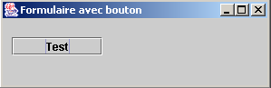
Si on redimensionne la fenêtre, le bouton reste au même endroit.
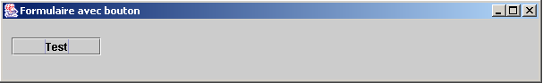
Si on clique sur le bouton Test, il ne se passe rien. En effet, nous n'avons pas encore associé de gestionnaire d'événements au bouton. Pour connaître le type de gestionnaires d'événements disponibles pour un composant donné, on peut chercher dans la définition de sa classe des méthodes addXXXListener qui permettent d'associer au composant un gestionnaire d'événements. La classe javax.swing.JButton dérive de la classe javax.swing.AbstractButton dans laquelle on trouve les méthodes suivantes :
Method Summary | |
void | addActionListener(ActionListener l) |
void | addChangeListener(ChangeListener l) |
void | addItemListener(ItemListener l) |
Ici, il faut lire la documentation pour savoir quel gestionnaire d'événements gère le clic sur le bouton. C'est l'interface ActionListener. Celle-ci ne définit qu'une méthode :
Method Summary | |
void | actionPerformed(ActionEvent e) |
La méthode reçoit un paramètre ActionEvent que nous ignorerons pour le moment. Pour gérer le clic sur le bouton btntest de notre programme on lui associe d'abord un gestionnaire d'événements :
btnTest.addActionListener(new ActionListener()
{
public void actionPerformed(ActionEvent evt){
btnTest_clic(evt);
}
}//classe anonyme
);//gestionnaire d'evt
Ici, la méthode actionPerformed renvoie à la méthode btnTest_clic que nous définissons de la façon suivante :
public void btnTest_clic(ActionEvent evt){
// suivi console
System.out.println("clic sur bouton");
}//btnTest_click
A chaque fois que l'utilisateur clique sur le bouton Test, on écrit un message sur la console. C'est ce que montre l'exécution suivante :

Le programme complet est le suivant :
// classes importées
import javax.swing.*;
import java.awt.*;
import java.io.*;
import java.awt.event.*;
// la classe formulaire
public class form4 extends JFrame {
// un bouton
JButton btnTest=null;
Container conteneur=null;
// le constructeur
public form4() {
// titre de la fenêtre
this.setTitle("Formulaire avec bouton");
// dimensions de la fenêtre
this.setSize(new Dimension(300,100));
// création d'un gestionnaire d'événements
WindowAdapter win=new WindowAdapter(){
public void windowClosing(WindowEvent e){System.exit(0);}
};//définition win
// ce gestionnaire d'événements va gérer les évts de la fenêtre courante
this.addWindowListener(win);
// on récupère le conteneur de la fenêtre
conteneur=this.getContentPane();
// on choisit un gestionnaire de mise en forme des composants dans ce conteneur
conteneur.setLayout(null);
// on crée un bouton
btnTest=new JButton();
// on fixe son libellé
btnTest.setText("Test");
// on fixe son emplacement et ses dimensions
btnTest.setBounds(10,20,100,20);
// on lui associe un gestionnaire d'évt
btnTest.addActionListener(new ActionListener()
{
public void actionPerformed(ActionEvent evt){
btnTest_clic(evt);
}
}//classe anonyme
);//gestinnaire d'evt
// on ajoute le bouton au conteneur
conteneur.add(btnTest);
}//constructeur
public void btnTest_clic(ActionEvent evt){
// suivi console
System.out.println("clic sur bouton");
}//btnTest_click
// fonction de test
public static void main(String[] args) {
// on affiche le formulaire
new form4().setVisible(true);
}//main
}//classe
5.1.4. Les gestionnaires d'événements
Les principaux composants swing que nous allons présenter sont les fenêtres (JFrame), les boutons (JButton), les cases à cocher (JCheckBox), les boutons radio (JButtonRadio), les listes déroulantes (JComboBox), les listes (JList), les variateurs (JScrollBar), les étiquettes (JLabel), les boîtes de saisie monoligne (JTextField) ou multilignes (JTextArea), les menus (JMenuBar), les éléments de menu (JMenuItem).
Les tableaux suivants donnent une liste de quelques gestionnaires d'événements et les événements auxquels ils sont liés.
Gestionnaire | Composant(s) | Méthode d'enregistrement | Evénement |
ActionListener | JButton , JCheckbox, JButtonRadio, JMenuItem | public void addActionListener(ActionListener) | clic sur le bouton, la case à cocher, le bouton radio, l'élément de menu |
JTextField | l'utilisateur a tapé [Entrée] dans la zone de saisie | ||
ItemListener | JComboBox, JList | public void addItemListener(ItemListener) | L'élément sélectionné a changé |
InputMethodListener | JTextField, JTextArea | public void addMethodInputListener(InputMethodListener) | le texte de la zone de saisie a changé ou le curseur de saisie a changé de position |
CaretListener | JTextField, JTextArea | public void addcaretListener(CaretListener) | Le curseur de saisie a changé de position |
AdjustmentListener | JScrollBar | public void addAdjustmentListener(AdjustmentListener) | la valeur du variateur a changé |
MouseMotionListener | public void addMouseMotionListener(MouseMotionListener) | la souris a bougé | |
WindowListener | JFrame | public void addWindowlistener(WindowListener) | événement fenêtre |
MouseListener | public void addMouselistener(MouseListener) | événements souris (clic, entrée/sortie du domaine d'un composant, bouton pressé, relâche) | |
FocusListener | public void addFocuslistener(FocusListener) | événement focus (obtenu, perdu) | |
KeyListener | public void addKeylistener(KeyListener) | événement clavier( touche tapée, pressée, relachée) |
Composant | Méthode d'enregistrement des gestionnaires d'évenements |
JButton | public void addActionListener(ActionListener) |
JCheckbox | public void addItemListener(ItemListener) |
JCheckboxMenuItem | public void addItemListener(ItemListener) |
JComboBox | public void addItemListener(ItemListener) public void addActionListener(ActionListener) |
Container | public void addContainerListener(ContainerListener) |
JComponent | public void addComponentListener(ComponentListener) public void addFocusListener(FocusListener) public void addKeyListener(KeyListener) public void addMouseListener(MouseListener) public void addMouseMotionListener(MouseMotionListener) |
JFrame | public void addWindowlistener(WindowListener) |
JList | public void addItemListener(ItemListener) |
JMenuItem | public void addActionListener(ActionListener) |
JPanel | comme Container |
JScrollPane | comme Container |
JScrollBar | public void addAdjustmentListener(AdjustmentListener) |
JTextComponent | public void addInputMethodListener(InputMethodListener) public void addCaretListener(CaretListener) |
JTextArea | comme JTextComponent |
JTextField | comme JTextComponent public void addActionListener(ActionListener) |
Tous les composants, sauf ceux du type TextXXX, étant dérivés de la classe JComponent, possédent également les méthodes associées à cette classe.
5.1.5. Les méthodes des gestionnaires d'événements
Le tableau suivant liste les méthodes que doivent implémenter les différents gestionnaires d'événements.
Interface | Méthodes |
ActionListener | public void actionPerformed(ActionEvent) |
AdjustmentListener | public void adjustmentValueChanged(AdjustmentEvent) |
ComponentListener | public void componentHidden(ComponentEvent) public void componentMoved(ComponentEvent) public void componentResized(ComponentEvent) public void componentShown(ComponentEvent) |
ContainerListener | public void componentAdded(ContainerEvent) public void componentRemoved(ContainerEvent) |
FocusListener | public void focusGained(FocusEvent) public void focusLost(FocusEvent) |
ItemListener | public void itemStateChanged(ItemEvent) |
KeyListener | public void keyPressed(KeyEvent) public void keyReleased(KeyEvent) public void keyTyped(KeyEvent) |
MouseListener | public void mouseClicked(MouseEvent) public void mouseEntered(MouseEvent) public void mouseExited(MouseEvent) public void mousePressed(MouseEvent) public void mouseReleased(MouseEvent) |
MouseMotionListener | public void mouseDragged(MouseEvent) public void mouseMoved(MouseEvent) |
TextListener | public void textValueChanged(TextEvent) |
InputmethodListener | public void InputMethodTextChanged(InputMethodEvent) public void caretPositionChanged(InputMethodEvent) |
CaretLisetner | public void caretUpdate(CaretEvent) |
WindowListener | public void windowActivated(WindowEvent) public void windowClosed(WindowEvent) public void windowClosing(WindowEvent) public void windowDeactivated(WindowEvent) public void windowDeiconified(WindowEvent) public void windowIconified(WindowEvent) public void windowOpened(WindowEvent) |
5.1.6. Les classes adaptateurs
Comme nous l'avons vu pour l'interface WindowListener, il existe des classes nommées XXXAdapter qui implémentent les interfaces XXXListener avec des méthodes vides. Un gestionnaire d'événements dérivé d'une classe XXXAdapter peut alors n'implémenter qu'une partie des méthodes de l'interface XXXListener, celles dont l’application a besoin.
Supposons qu'on veuille gérer les clics de souris sur un composant Frame f1. On pourrait lui associer un gestionnaire d'événements par :
et écrire :
public class gestionnaireSouris implements MouseListener{
// on écrit les 5 méthodes de l'interface MouseListener
// mouseClicked, ..., mouseReleased)
}// fin classe
Comme on ne souhaite gérer que les clics de souris, il est cependant préférable d'écrire :
public class gestionnaireSouris extends MouseAdapter{
// on écrit une seule méthode, celle qui gère les clics de souris
public void mouseClicked(MouseEvent evt){
…
}
}// fin classe
Le tableau suivant donne les classes adapteurs des différents gestionnaires d'événements :
Gestionnaire d'événements | Adaptateur |
ComponentListener | ComponentAdapter |
ContainerListener | ContainerAdapter |
FocusListener | FocusAdapter |
KeyListener | KeyAdapter |
MouseListener | MouseAdapter |
MouseMotionListener | MouseMotionAdapter |
WindowListener | WindowAdapter |
5.1.7. Conclusion
Nous venons de présenter les concepts de base de la création d'interfaces graphiques en Java :
- création d'une fenêtre
- création de composants
- association des composants à la fenêtre avec un gestionnaire de disposition
- association de gestionnaires d'événeemnts aux composants
Maintenant, plutôt que de construire des interfaces graphiques "à la main" comme il vient d'être fait nous allons utiliser Jbuilder, un outil de développement Java de Borland/Inprise dans sa version 4 et supérieure.Nous utiliserons les composants de la bibliothèque java.swing actuellement préconisée par Sun, créateur de Java.
5.2. Construire une interface graphique avec JBuilder
5.2.1. Notre premier projet Jbuilder
Afin de nous familiariser avec Jbuilder, construisons une application très simple : une fenêtre vide.
- Lancez Jbuilder et prendre l'option Fichier/nouveau projet. La 1ère page d'un assistant s'affiche alors :

- Remplir les champs suivants :
Nom du projet | début provoquera la création d'un fichier projet début.jpr sous le dossier indiqué dans le champ "Nom du répertoire du projet" |
Chemin racine | indiquez le dossier sous lequel sera créé le dossier du projet que vous allez créer. |
Nom du répertoire projet | indiquez le nom du dossier où seront placés tous les fichiers du projet. Ce dossier sera créé sous le répertoire indiqué dans le champ "Chemin racine" |
Les fichiers source (.java, .html, ...), les fichiers destinations (.class,..), les fichiers de sauvegarde pourraient aller dans des répertoires différents. En laissant leurs champs vides, ils seront placés dans le même répertoire que le projet.
Faites [suivant]
- Un écran confirme les choix de l'étape précédente

Faites [suivant]
- Un nouvel écran vous demande de caractériser votre projet :

Faites [terminer]
- Vérifier que l'option Voir/projet est cochée. Vous devriez voir la structure de votre projet dans la fenêtre de gauche.
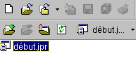
- Maintenant construisons une interface graphique dans ce projet. Choisissez l'option Fichier/Nouveau/Application :
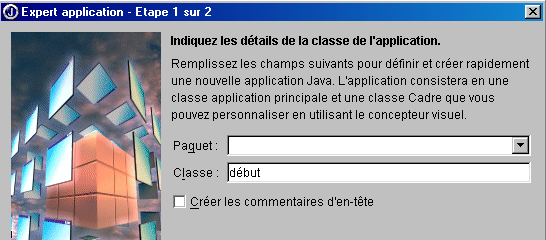
Dans le champ classe, on met le nom de la classe qui va être créée. Ici on a repris le même nom que le projet.
Faites [suivant]
- L'écran suivant apparaît :

Classe | interfaceDébut C'est le nom de la classe correspondant à la fenêtre qui va être construite |
Titre | C'est le texte qui apparaîtra dans la barre de titre de la fenêtre |
Notez que ci-dessus, nous avons demandé que la fenêtre soit centrée sur l'écran au démarrage de l'application.
Faites [Terminer]
- C'est maintenant que Jbuilder s'avère utile.
- il génère les fichiers source .java des deux classes dont on a donné les noms : la classe de l'application et celle de l'interface graphique. On voit apparaître ces deux fichiers dans la structure du projet dans la fenêtre de gauche
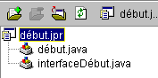
- pour avoir accès au code généré pour les deux classes, il suffit de double-cliquer sur le fichier .java correspondant. Nous reviendrons ultérieurement sur le code généré.
- Vérifiez que l'option Voir/Structure est cochée. Elle permet de voir la structure de la classe actuellement sélectionnée (double clic sur le .java). Voici par exemple la structure de la classe début :

On apprend ici :
-
les bibliothèques importées (imports)
-
qu'il y a un constructeur début()
-
qu'il y a une méthode statique main()
-
qu'il y a un attribut packFrame
Quel est l'intérêt d'avoir accès à la structure d'une classe ?
-
vous avez une vue d'ensemble de celle-ci. C'est utile si votre classe est complexe.
-
vous pouvez accéder au code d'une méthode en cliquant dessus dans la fenêtre de structure de la classe. De nouveau c'est utile si votre classe a des centaines de lignes. Vous n'êtes pas obligé de passer toutes les lignes en revue pour trouver le code que vous cherchez.
Le code généré par Jbuilder est déjà utilisable. Faites Exécuter/Exécuter le projet ou F9 et vous obtiendrez la fenêtre demandée :

De plus, elle se ferme proprement lorsqu'on clique sur le bouton de fermeture de la fenêtre. Nous venons de construire notre première interface graphique. Nous pouvons sauvegarder notre projet par l'option Fichier/Fermer les projets :

En appuyant sur Tous, tous les projets présents dans la fenêtre ci-dessus seront cochés. OK les fermera. Si nous avons la curiosité d'aller, avec l'explorateur windows, dans le dossier de notre projet (celui qui a été indiqué à l'assistant au début de la configuration du projet), nous y trouvons les fichiers suivants :

Dans notre exemple, nous avions demandé à ce que tous les fichiers (source .java, destination .class, sauvegarde .jpr~) soient dans le même dossier que le projet .jpr.
5.2.2. Les fichiers générés par Jbuilder pour une interface graphique
Ayons maintenant la curiosité de regarder ce que Jbuilder a généré comme fichiers source .java. Il est important de savoir lire ce qui est généré puisque la plupart du temps nous sommes amenés à ajouter du code à ce qui a été généré. Commençons par récupérer notre projet : Fichier/Ouvrir un projet et sélectionnons le projet début.jpr. Nous retrouvons le projet construit précédemment.
5.2.2.1. La classe principale
Examinons la classe début.java en double-cliquant sur son nom dans la fenêtre présentant la liste des fichiers du projet. Nous avons le code suivant :
import javax.swing.UIManager;
import java.awt.*;
public class début {
boolean packFrame = false;
/**Construire l'application*/
public début() {
interfaceDébut frame = new interfaceDébut();
//Valider les cadres ayant des tailles prédéfinies
//Compacter les cadres ayant des infos de taille préférées - ex. depuis leur disposition
if (packFrame) {
frame.pack();
}
else {
frame.validate();
}
//Centrer la fenêtre
Dimension screenSize = Toolkit.getDefaultToolkit().getScreenSize();
Dimension frameSize = frame.getSize();
if (frameSize.height > screenSize.height) {
frameSize.height = screenSize.height;
}
if (frameSize.width > screenSize.width) {
frameSize.width = screenSize.width;
}
frame.setLocation((screenSize.width - frameSize.width) / 2, (screenSize.height - frameSize.height) / 2);
frame.setVisible(true);
}
/**Méthode principale*/
public static void main(String[] args) {
try {
UIManager.setLookAndFeel(UIManager.getSystemLookAndFeelClassName());
}
catch(Exception e) {
e.printStackTrace();
}
new début();
}
}
Commentons le code généré :
- la fonction main fixe l'aspect de la fenêtre (setLookAndFeel) et crée une instance de la classe début.
- le constructeur début() est alors exécuté. Il crée une instance frame de la classe de la fenêtre (new interfaceDébut()). Celle-ci est construite mais pas affichée.
- La fenêtre est alors dimensionnée selon les informations disponibles pour chacun des composants de la fenêtre (frame.validate). Elle commence alors son existence séparée en s'affichant et en répondant aux sollicitations de l'utilisateur.
- La fenêtre est centrée sur l'écran ceci parce qu'on l'avait demandé lors de la configuration de la fenêtre avec l'assistant.
Voyons ce qui serait obtenu si on réduisait le code début.java à son strict minimum telle que nous l'avons fait en début de chapitre. Créons une nouvelle classe. Prenez l'option Fichier/Nouvelle classe :
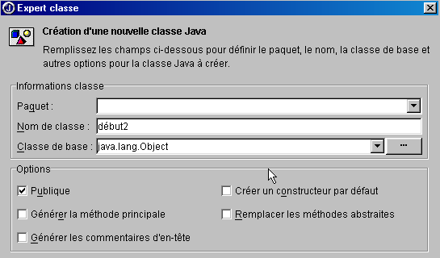
Nommez la nouvelle classe début2 et faites [Terminer]. Un nouveau fichier apparaît dans le projet :

Le fichier début2.java est réduit à sa plus simple expression :
Complétons la classe de la façon suivante :
public class début2 {
// fonction principale
public static void main(String args[]){
// crée la fenêtre
new interfaceDébut().show(); // ou new interfaceDébut.setVisible(true);
}//main
}//classe début2
La fonction main crée une instance de la fenêtre interfaceDébut et l'affiche (show). Avant d'exécuter notre projet, il nous faut signaler que la classe contenant la fonction main à exécuter est maintenant la classe début2. Cliquez droit sur le projet début.jpr et choisissez l'option propriétés puis l'onglet Exécution :
21

Ici, il est indiqué que la classe principale est début (1). Appuyez sur le bouton (2) pour choisir une autre classe principale :

Choisissez début2 et faites [OK].

Faites [OK] pour valider ce choix puis demandez l'exécution du projet par Exécuter/Exécuter projet ou F9. Vous obtenez la même fenêtre qu'avec la classe début si ce n'est qu'elle n'est pas centrée puisqu'ici cela n'a pas été demandé. Par la suite, nous ne présenterons plus la classe principale générée par Jbuilder car elle fait toujours la même chose : créer une fenêtre. C'est sur la classe de cette dernière que désormais nous nous concentrerons.
5.2.2.2. La classe de la fenêtre
Regardons maintenant le code qui a été généré pour la classe interfaceDébut :
import java.awt.*;
import java.awt.event.*;
import javax.swing.*;
public class interfaceDébut extends JFrame {
JPanel contentPane;
BorderLayout borderLayout1 = new BorderLayout();
/**Construire le cadre*/
public interfaceDébut() {
enableEvents(AWTEvent.WINDOW_EVENT_MASK);
try {
jbInit();
}
catch(Exception e) {
e.printStackTrace();
}
}
/**Initialiser le composant*/
private void jbInit() throws Exception {
contentPane = (JPanel) this.getContentPane();
contentPane.setLayout(borderLayout1);
this.setSize(new Dimension(400, 300));
this.setTitle("Ma première interface graphique avec Jbuilder");
}
/**Remplacé, ainsi nous pouvons sortir quand la fenêtre est fermée*/
protected void processWindowEvent(WindowEvent e) {
super.processWindowEvent(e);
if (e.getID() == WindowEvent.WINDOW_CLOSING) {
System.exit(0);
}
}
}
5.2.2.2.1. Les bibliothèques importées
Il s'agit des bibliothèques java.awt, java.awt.event et javax.swing. Les deux premières étaient les seules disponibles pour construire des interfaces graphiques avec les premières versions de Java. La bibliothèque javax.swing est plus récente. Ici, elle est nécessaire pour la fenêtre de type JFrame qui est utilisée ici.
5.2.2.2.2. Les attributs
JPanel est un type conteneur dans lequel on peut mettre des composants. BorderLayout est l'un des types de gestionnaire de mise en forme disponibles pour placer les composants dans le conteneur. Dans tous nos exemples, nous n'utiliserons pas de gestionnaire de mise en forme et placerons nous-mêmes les composants à un endroit précis du conteneur. Pour cela, nous utiliserons le gestionnaire de mise en forme null.
5.2.2.2.3. Le constructeur de la fenêtre
/**Construire le cadre*/
public interfaceDébut() {
enableEvents(AWTEvent.WINDOW_EVENT_MASK);
try {
jbInit();
}
catch(Exception e) {
e.printStackTrace();
}
}
/**Initialiser le composant*/
private void jbInit() throws Exception {
contentPane = (JPanel) this.getContentPane();
contentPane.setLayout(borderLayout1);
this.setSize(new Dimension(400, 300));
this.setTitle("Ma première interface graphique avec Jbuilder");
}
- Le constructeur commence par dire qu'il va gérer les événements sur la fenêtre (enableEvents), puis il lance la méthode jbInit.
- Le conteneur (JPanel) de la fenêtre (JFrame) est obtenu (getContentPane)
- Le gestionnaire de mise en forme est fixé (setLayout)
- La taille de la fenêtre est fixée (setSize)
- Le titre de la fenêtre est fixé (setTitle)
5.2.2.2.4. Le gestionnaire d'événements
/**Remplacé, ainsi nous pouvons sortir quand la fenêtre est fermée*/
protected void processWindowEvent(WindowEvent e) {
super.processWindowEvent(e);
if (e.getID() == WindowEvent.WINDOW_CLOSING) {
System.exit(0);
}
Le constructeur avait indiqué que la classe traiterait les événements de la fenêtre. C'est la méthode processWindowEvent qui fait ce travail. Elle commence par transmettre à sa classe parent (JFrame) l'événement WindowEvent reçu puis si celui-ci est l'événement WINDOW_CLOSING provoqué par le clic sur le bouton de fermeture de la fenêtre, l'application est arrêtée.
5.2.2.2.5. Conclusion
Le code de la classe de la fenêtre est différent de celui présenté dans l'exemple de début de chapitre. Si nous utilisions un autre outil de génération Java que Jbuilder nous aurions sans doute un code encore différent. Dans la pratique, nous accepterons le code produit par Jbuilder pour construire la fenêtre afin de nous concentrer uniquement sur l'écriture des gestionnaires d'événements de l'interface graphique.
5.2.3. Dessiner une interface graphique
5.2.3.1. Un exemple
Dans l'exemple précédent, nous n'avions pas mis de composants dans la fenêtre. Construisons maintenant une fenêtre avec un bouton, un libellé et un champ de saisie :

Les champs sont les suivants :
n° | nom | type | rôle |
1 | lblSaisie | JLabel | un libellé |
2 | txtSaisie | JTextField | une zone de saisie |
3 | cmdAfficher | JButton | pour afficher dans une boîte de dialogue le contenu de la zone de saisie txtSaisie |
En procédant comme pour le projet précédent, construisez le projet interface2.jpr sans mettre pour l'instant de composants dans la fenêtre.

Dans la fenêtre ci-dessus, sélectionnez la classe interface2.java de la fenêtre. A droite de cette fenêtre, se trouve un classeur à onglets :

L'onglet Source donne accès au code source de la classe interface2.java. L'onglet Conception permet de construire visuellement la fenêtre. Sélectionnez cet onglet. Vous avez devant vous le conteneur de la fenêtre, qui va recevoir les composants que vous allez y déposer. Il est pour l'instant vide. Dans la fenêtre de gauche est montrée la structure de la classe :

this | représente la fenêtre |
contentPane | son conteneur dans lequel on va déposer des composants ainsi que le mode de mise en forme de ces composants dans le conteneur (BorderLayout par défaut) |
borderLayout1 | une instance du gestionnaire de mise en forme |
Sélectionnez l'objet this. Sa fenêtre de propriétés apparaît alors sur la droite :

Certaines de ces propriétés sont à noter :
background | pour fixer la couleur de fond de la fenêtre |
foreground | pour fixer la couleur des dessins sur la fenêtre |
JMenuBar | pour associer un menu à la fenêtre |
title | pour donner un titre à la fenêtre |
resizable | pour fixer le type de fenêtre |
font | pour fixer la police de caractères des écritures dans la fenêtre |
L'objet this étant toujours sélectionné, on peut redimensionner le conteneur affiché à l'écran en tirant sur les points d'ancrage situés autour du conteneur :

Nous sommes maintenant prêts à déposer des composants dans le conteneur ci-dessus. Auparavant, nous allons changer le gestionnaire de mise en forme. Sélectionnez l'objet contentPane dans la fenêtre de structure :

Puis dans la fenêtre de propriétés de cet objet, sélectionnez la propriété layout et choisissez parmi les valeurs possibles, la valeur null :

Cette absence de gestionnaire de mise en forme va nous permettre de placer librement les composants dans le conteneur. Il est temps maintenant de choisir ceux-ci.
Lorsque le volet Conception est sélectionné, les composants sont disponibles dans un classeur à onglets en haut de la fenêtre de conception :
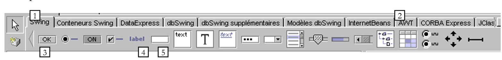
Pour construire l'interface graphique, nous disposons de composants swing (1) et de composants awt (2). Nous allons utiliser ici les composants swing. Dans la barre de composants ci-dessus, choisissez un composant JLabel (3), un composant JTextField (4) et un composant JButton (5) et placez-les dans le conteneur de la fenêtre de conception.

Maintenant personnalisons chacun de ces 3 composants :
- l'étiquette (JLabel) jLabel1
Sélectionnez le composant pour avoir sa fenêtre de propriétés. Dans celle-ci, modifiez les propriétés suivantes : name : lblSaisie, text : Saisie
- le champ de saisie (JTextField) jTextfield1
Sélectionnez le composant pour avoir sa fenêtre de propriétés. Dans celle-ci, modifiez les propriétés suivantes : name : txtSaisie, text : ne rien mettre
- le bouton (JButton) : name : cmdAfficher, text : Afficher
Nous avons maintenant la fenêtre suivante :

et la structure suivante :

Nous pouvons exécuter (F9) notre projet pour avoir un premier aperçu de la fenêtre en action :

Fermez la fenêtre. Il nous reste à écrire la procédure liée à un clic sur le bouton Afficher. Sélectionnez le bouton pour avoir accès à sa fenêtre de propriétés. Celle-ci a deux onglets : propriétés et événements. Choisissez événements.

La colonne de gauche de la fenêtre liste les événements possibles sur le bouton. Un clic sur un bouton correspond à l'événement actionPerformed. La colonne de droite contient le nom de la procédure appelée lorsque l'événement correspondant se produit. Cliquez sur la cellule à droite de l'événement actionPerformed :

Jbuilder génère un nom par défaut pour chaque gestionnaire d'événement de la forme nomComposant_nomEvénement ici cmdAfficher_actionPerformed. On pourrait effacer le nom proposé par défaut et en inscrire un autre. Pour avoir accès au code du gestionnaire cmdAfficher_actionPerformed il suffit de double-cliquer sur son nom ci-dessus. On passe alors automatiquement au volet source de la classe positionné sur le squelette du code du gestionnaire d'événement :
Il ne nous reste plus qu'à compléter ce code. Ici, nous voulons présenter une boîte de dialogue avec dedans le contenu du champ txtSaisie :
void cmdAfficher_actionPerformed(ActionEvent e) {
JOptionPane.showMessageDialog(this, "texte saisi="+txtSaisie.getText(),
"Vérification de la saisie",JOptionPane.INFORMATION_MESSAGE);
}
JOptionPane est une classe de la bibliothèque javax.swing. Elle permet d'afficher des messages accompagnés d'une icône ou de demander des informations à l'utilisateur. Ici, nous utilisons une méthode statique de la classe :
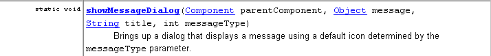
parentComponent | l'objet conteneur "parent" de la boîte de dialogue : ici this. |
message | un objet à afficher. Ici le contenu du champ de saisie |
title | le titre de la boîte de dialogue |
messageType | le type du message à afficher. Conditionne l'icône qui sera affichée dans la boîte à côté du message. Les valeurs possibles : INFORMATION_MESSAGE, QUESTION_MESSAGE, ERROR_MESSAGE, WARNING_MESSAGE, PLAIN_MESSAGE |
Exécutons notre application (F9) :

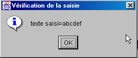
5.2.3.2. Le code de la classe de la fenêtre
import java.awt.*;
import java.awt.event.*;
import javax.swing.*;
import java.beans.*;
import javax.swing.event.*;
public class interface2 extends JFrame {
JPanel contentPane;
JLabel lblSaisie = new JLabel();
JTextField txtSaisie = new JTextField();
JButton cmdAfficher = new JButton();
/**Construire le cadre*/
public interface2() {
enableEvents(AWTEvent.WINDOW_EVENT_MASK);
try {
jbInit();
}
catch(Exception e) {
e.printStackTrace();
}
}
/**Initialiser le composant*/
private void jbInit() throws Exception {
lblSaisie.setText("Saisie");
lblSaisie.setBounds(new Rectangle(25, 23, 71, 21));
contentPane = (JPanel) this.getContentPane();
contentPane.setLayout(null);
this.setSize(new Dimension(304, 129));
this.setTitle("Saisies & boutons - 1");
txtSaisie.setBounds(new Rectangle(120, 21, 138, 24));
cmdAfficher.setText("Afficher");
cmdAfficher.setBounds(new Rectangle(111, 77, 77, 20));
cmdAfficher.addActionListener(new java.awt.event.ActionListener() {
public void actionPerformed(ActionEvent e) {
cmdAfficher_actionPerformed(e);
}
});
contentPane.add(lblSaisie, null);
contentPane.add(txtSaisie, null);
contentPane.add(cmdAfficher, null);
}
/**Remplacé, ainsi nous pouvons sortir quand la fenêtre est fermée*/
protected void processWindowEvent(WindowEvent e) {
super.processWindowEvent(e);
if (e.getID() == WindowEvent.WINDOW_CLOSING) {
System.exit(0);
}
}
void cmdAfficher_actionPerformed(ActionEvent e) {
JOptionPane.showMessageDialog(this, "texte saisi="+txtSaisie.getText(), "Vérification de la saisie",JOptionPane.INFORMATION_MESSAGE);
}
}
5.2.3.2.1. Les attributs
JPanel contentPane;
JLabel lblSaisie = new JLabel();
JTextField txtSaisie = new JTextField();
JButton cmdAfficher = new JButton();
On trouve le conteneur des composants de type JPanel et les trois composants.
5.2.3.2.2. Le constructeur
/**Construire le cadre*/
public interface2() {
enableEvents(AWTEvent.WINDOW_EVENT_MASK);
try {
jbInit();
}
catch(Exception e) {
e.printStackTrace();
}
}
/**Initialiser le composant*/
private void jbInit() throws Exception {
lblSaisie.setText("Saisie");
lblSaisie.setBounds(new Rectangle(25, 23, 71, 21));
contentPane = (JPanel) this.getContentPane();
contentPane.setLayout(null);
this.setSize(new Dimension(304, 129));
this.setTitle("Saisies & boutons - 1");
txtSaisie.setBounds(new Rectangle(120, 21, 138, 24));
cmdAfficher.setText("Afficher");
cmdAfficher.setBounds(new Rectangle(111, 77, 77, 20));
cmdAfficher.addActionListener(new java.awt.event.ActionListener() {
public void actionPerformed(ActionEvent e) {
cmdAfficher_actionPerformed(e);
}
});
contentPane.add(lblSaisie, null);
contentPane.add(txtSaisie, null);
contentPane.add(cmdAfficher, null);
}
Le constructeur interface2 est semblable au constructeur de la précédente interface graphique étudiée. C'est dans la méthode jbInit qu'on trouve des différences : le code de construction de la fenêtre dépend des composants qu'on y a placés. On peut reprendre le code de jbInit en y mettant nos propres commentaires :
private void jbInit() throws Exception {
// la fenêtre elle-même (taille, titre)
this.setSize(new Dimension(304, 129));
this.setTitle("Saisies & boutons - 1");
// le conteneur des composants
contentPane = (JPanel) this.getContentPane();
// pas de gestionnaire de mise en forme pour ce conteneur
contentPane.setLayout(null);
// l'étiquette lblSaisie (libellé, position, taille)
lblSaisie.setText("Saisie");
lblSaisie.setBounds(new Rectangle(25, 23, 71, 21));
// le champ de saisie (position, taille)
txtSaisie.setBounds(new Rectangle(120, 21, 138, 24));
// le bouton Afficher (libellé, position, taille)
cmdAfficher.setText("Afficher");
cmdAfficher.setBounds(new Rectangle(111, 77, 77, 20));
// le gestionnaire d'évt du bouton
cmdAfficher.addActionListener(new java.awt.event.ActionListener() {
public void actionPerformed(ActionEvent e) {
cmdAfficher_actionPerformed(e);
}
});
// ajout des 3 composants au conteneur
contentPane.add(lblSaisie, null);
contentPane.add(txtSaisie, null);
contentPane.add(cmdAfficher, null);
}//jbInit
On notera deux points :
- ce code aurait pu être écrit à la main. Cela veut dire qu'on peut se passer de Jbuilder pour construire une interface graphique.
- la façon dont le gestionnaire d'événement du bouton cmdAfficher est fixé. Le gestionnaire d'événement du composant cmdAfficher aurait pu être déclaré par cmdAfficher.addActionListener(new gestionnaire()) où gestionnaire serait une classe avec une méthode publique actionPerformed chargée de gérer le clic sur le bouton Afficher. Ici, Jbuilder utilise comme gestionnaire, une instance d'une classe anonyme :
new java.awt.event.ActionListener() {
public void actionPerformed(ActionEvent e) {
cmdAfficher_actionPerformed(e);
}
Une nouvelle instance de l'interface ActionListener est créée avec sa méthode actionPerformed définie dans la foulée. Celle-ci se contente d'appeler une méthode de la classe interface2. Tout ceci n'est qu'un artifice pour définir dans la même classe que la fenêtre les procédures de traitement des événements des composants de cette fenêtre. On pourrait procéder autrement :
qui fait que la méthode actionPerformed sera cherchée dans this c'est à dire dans la classe de la fenêtre. Cette seconde méthode semble plus simple mais la première a sur elle un avantage : elle permet d'avoir des gestionnaires différents pour des boutons différents alors que la seconde méthode ne le permet pas. Dans de dernier cas, en effet, l'unique méthode actionPeformed doit traiter les clics de différents boutons et donc commencer par identifier lequel est à l'origine de l'événement avant de commencer à travailler.
5.2.3.2.3. Les gestionnaires d'événements
On retrouve ceux déjà étudiés :
/**Remplacé, ainsi nous pouvons sortir quand la fenêtre est fermée*/
protected void processWindowEvent(WindowEvent e) {
super.processWindowEvent(e);
if (e.getID() == WindowEvent.WINDOW_CLOSING) {
System.exit(0);
}
}
// clic sur bouton Afficher
void cmdAfficher_actionPerformed(ActionEvent e) {
JOptionPane.showMessageDialog(this, "texte saisi="+txtSaisie.getText(), "Vérification de la saisie",JOptionPane.INFORMATION_MESSAGE);
}
5.2.3.3. Conclusion
Des deux projets étudiés, nous pouvons conclure qu'une fois l'interface graphique construite avec Jbuilder, le travail du développeur consiste à écrire les gestionnaires des événements qu'il veut gérer pour cette interface graphique.
5.2.4. Chercher de l'aide
Avec Java, on a souvent besoin d'aide à cause notamment du très grand nombre de classes disponibles. Nous donnons ici quelques indications pour trouver de l'aide sur une classe. Prenez l'option Aide/Rubriques d'aide du menu.

L'écran d'aide a généralement deux fenêtres :
- celle de gauche où l'on dit ce qu'on cherche. Elle a trois onglets : Sommaire, Index et Chercher.
- celle de droite qui présente le résultat de la recherche
On dispose d'une aide sur la façon d'utiliser l'aide de Jbuilder. Choisissez dans l'aide de Jbuilder, l'option Aide/Utilisation de l'aide. On vous explique alors comment utiliser l'aide. On vous indique par exemple les différentes composantes du visualisateur d'aide :

Examinons d'un peu plus près, les pages Sommaire et Index.
5.2.4.1. Aide : Sommaire
5.2.4.1.1. Sommaire : Introduction à Java
On trouvera ici des éléments de base de Java mais pas seulement comme le montre la liste des thèmes évoqués dans cette option :

5.2.4.1.2. Sommaire : Tutoriels
Si nous sélectionnons l'option Tutoriels dans le sommaire ci-dessus, la fenêtre de droite nous présente une liste de tutoriels disponibles :

Les tutoriels de base sont particulièrement intéressants pour commencer à prendre en main Jbuilder. Il en existe beaucoup d'autres que ceux présentés ci-dessus et lorsqu'on veut développer une application il peut être utile de vérifier auparavant s'il n'y a pas un tutoriel qui pourrait nous aider.
5.2.4.1.3. Sommaire : le JDK
En sélectionnant l'option Java 2 JDK 1.3, on a accès à toutes les bibliothèques du JDK. Généralement ce n'est pas là qu'il faut chercher si on a besoin d'informations sur une classe précise et qu'on ne sait pas dans quelle bibliothèque elle se trouve. Par contre, cette option présente de l'intérêt si on est intéressé par avoir une vue globale des bibliothèques de Java.
5.2.4.2. Aide : Index
Sélectionnez l'onglet Index de la fenêtre de gauche dans l'aide. Cette option vous permet par exemple de trouver de l'aide sur une classe. Supposons par exemple que vous vouliez connaître les méthodes des champs de saisie swing JTextField. Tapez JTextField dans le champ de saisie du texte recherché :

L'aide va ramener les entrées d'index commençant par le texte tapé :

Il vous reste à double-cliquer sur l'entrée qui vous intéresse, ici JTextField class. L'aide sur cette classe s'affiche alors dans la fenêtre de droite :

Une description complète de la classe vous est alors donnée.
5.2.5. Quelques composants swing
Nous présentons maintenant diverses applications mettant en jeu les composants swing les plus courants afin d'en découvrir les principales méthodes et propriétés. Pour chaque application, nous présentons l'interface graphique et le code intéressant notamment celui des gestionnaires d'événements.
5.2.5.1. composants JLabel et JTextField
Nous avons déjà rencontré ces deux composants. JLabel est un composant texte et JTextField un composant champ de saisie. Leurs deux méthodes principales sont
String getText() | pour avoir le contenu du champ de saisie ou le texte du libellé |
void setText(String unTexte) | pour mettre unTexte dans le champ ou le libellé |
Les événements habituellement utilisés pour JTextField sont les suivants :
actionPerformed | signale que l'utilisateur a validé (touche Entrée) le texte saisi |
caretUpdate | signale que l'utilisateur à bougé le curseur de saisie |
inputMethodChanged | signale que l'utilisateur à modifié le champ de saisie |
Voici un exemple qui utilise l'événement caretUpdate pour suivre les évolutions d'un champ de saisie :

n° | type | nom | rôle |
1 | JTextField | txtSaisie | champ de saisie |
2 | JTextField | txtControle | affiche le texte de 1 en temps réel |
3 | JButton | cmdEffacer | pour effacer les champs 1 et 2 |
4 | JButton | cmdQuitter | pour quitter l'application |
Le code pertinent de cette application est le suivant :
import java.awt.*;
....
public class Cadre1 extends JFrame {
JPanel contentPane;
JTextField txtSaisie = new JTextField();
JLabel jLabel1 = new JLabel();
JLabel jLabel2 = new JLabel();
JTextField txtControle = new JTextField();
JButton CmdEffacer = new JButton();
JButton CmdQuitter = new JButton();
/**Construire le cadre*/
public Cadre1() {
enableEvents(AWTEvent.WINDOW_EVENT_MASK);
try {
jbInit();
}
catch(Exception e) {
e.printStackTrace();
}
}
/**Initialiser le composant*/
private void jbInit() throws Exception {
....
txtSaisie.addCaretListener(new javax.swing.event.CaretListener() {
public void caretUpdate(CaretEvent e) {
txtSaisie_caretUpdate(e);
}
});
...
CmdEffacer.addActionListener(new java.awt.event.ActionListener() {
public void actionPerformed(ActionEvent e) {
CmdEffacer_actionPerformed(e);
}
});
...
CmdQuitter.addActionListener(new java.awt.event.ActionListener() {
public void actionPerformed(ActionEvent e) {
CmdQuitter_actionPerformed(e);
}
});
....
}
/**Remplacé, ainsi nous pouvons sortir quand la fenêtre est fermée*/
protected void processWindowEvent(WindowEvent e) {
...
}
void txtSaisie_caretUpdate(CaretEvent e) {
// le curseur de saisie a bougé
txtControle.setText(txtSaisie.getText());
}
void CmdQuitter_actionPerformed(ActionEvent e) {
// on quitte l'application
System.exit(0);
}
void CmdEffacer_actionPerformed(ActionEvent e) {
// on efface le contenu du champ de saisie
txtSaisie.setText("");
}
}
Voici un exemple d'exécution :

5.2.5.2. composant JComboBox

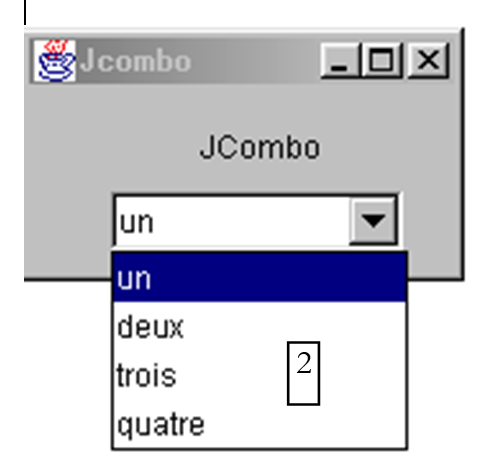
Un composant JComboBox est une liste déroulante doublée d'une zone de saisie : l'utilisateur peut soit choisir un élément dans (2) soit taper du texte dans (1). Par défaut, les JComboBox ne sont pas éditables. Il faut appeler explicitement la méthode setEditable(true) pour qu'ils le deviennent. Pour découvrir la classe JComboBox, tapez JComboBox dans l'index de l'aide.
L'objet JComboBox peut être construit de différentes façons :
new JComboBox() | crée un combo vide |
new JComboBox (Object[] items) | crée un combo contenant un tableau d'objets |
new JComboBox(Vector items) | idem avec un vecteur d'objets |
On peut s'étonner qu'un combo puisse contenir des objets alors qu'habituellement il contient des chaînes de caractères. Au niveau visuel, ce sera le cas. Si un JComboBox contient un objet obj, il affiche la chaîne obj.toString(). On se rappelle que tout objet a une méthode toString héritée de la classe Object et qui rend une chaîne de caractères "représentative" de l'objet.
Les méthodes utiles de la classe JCombobox sont les suivantes :
void addItem(Object unObjet) | ajoute un objet au combo |
int getItemCount() | donne le nombre d'éléments du combo |
Object getItemAt(int i) | donne l'objet n° i du combo |
void insertItemAt(Object unObjet, int i) | insère unObjet en position i du combo |
int getSelectedIndex() | donne le n° de l'élément sélectionné dans le combo |
Object getSelectedItem() | donne l'objet sélectionné dans le combo |
void setSelectedIndex(int i) | sélectione l'élément i du combo |
void setSelectedItem(Object unObjet) | sélectionne l'objet spécifié dans le combo |
void removeAllItems() | vide le combo |
void removeItemAt(int i) | enlève l'élément n° i du combo |
void removeItem(Object unObjet) | enlève l'objet spécifié du combo |
void setEditable(boolean val) | rend le combo éditable (val=true) ou non (val=false) |
Lors du choix d'un élément dans la liste déroulante se produit l'événement actionPerformed qui peut être alors utilisé pour être averti du changement de sélection dans le combo. Dans l'application suivante, nous utilisons cet événement pour afficher l'élément qui a été sélectionné dans la liste.

Nous ne présentons que le code pertinent de la fenêtre.
public class Cadre1 extends JFrame {
JPanel contentPane;
JComboBox jComboBox1 = new JComboBox();
JLabel jLabel1 = new JLabel();
/**Construire le cadre*/
public Cadre1() {
enableEvents(AWTEvent.WINDOW_EVENT_MASK);
try {
jbInit();
}
catch(Exception e) {
e.printStackTrace();
}
// traitement - on remplit le combo
String[] infos={"un","deux","trois","quatre"};
for(int i=0;i<infos.length;i++)
jComboBox1.addItem(infos[i]);
}
/**Initialiser le composant*/
private void jbInit() throws Exception {
....
jComboBox1.addActionListener(new java.awt.event.ActionListener() {
public void actionPerformed(ActionEvent e) {
jComboBox1_actionPerformed(e);
}
});
....
}
void jComboBox1_actionPerformed(ActionEvent e) {
// un nouvel élément a été sélectionné - on l'affiche
JOptionPane.showMessageDialog(this,jComboBox1.getSelectedItem(),
"actionPerformed",JOptionPane.INFORMATION_MESSAGE);
}
}
5.2.5.3. composant JList
Le composant swing JList est plus complexe que son homologue de la bibliothèque awt. Il y a deux différences importantes :
- le contenu de la liste est géré par un objet différent de la liste elle-même. Ici nous prendrons un objet DefaultListModel objet qui s'utilise comme un Vector mais qui de plus avertit l'objet JList dès que son contenu change afin que l'affichage visuel de la liste change aussi.
- la liste n'est pas défilante par défaut. Il faut mettre la liste dans un conteneur ScrollPane qui lui, permet ce défilement.
Dans le code source, la définition d'une liste peut se faire de la façon suivante :
// le vecteur des valeurs de la liste
DefaultlistModel valeurs=new DefaultListModel();
// la liste elle-même à laquelle on associe le vecteur de ses valeurs
JList jList1 = new JList(valeurs);
// le conteneur défilant dans lequel on place la liste pour avoir une liste défilante
JScrollPane jScrollPane1 = new JScrollPane(jList1);
Pour inclure la liste jList1 dans le conteneur jScrollPane1, le code généré par JBuilder procéde différemment :
- déclaration du conteneur dans les attributs de la fenêtre
- puis dans le code de jbInit, la liste est associée au conteneur
Pour ajouter des valeurs à la liste JList1 ci-dessus, il suffit de les ajouter à son vecteur de valeurs valeurs :
et on obtient alors la fenêtre suivante :

Comment cette interface est-elle construite ?
- on choisit un composant JScrollPane dans la page "Conteneurs swing" des composants et on le dépose dans la fenêtre en le dimensionnant à la taille désirée
- on choisit un composant JList dans la page "swing" des composants et on le dépose dans le conteneur JScrollPane dont il occupe alors toute la place.
Le code généré par Jbuilder doit être légèrement remanié pour obtenir le code suivant :
public class interfaceAppli extends JFrame {
JPanel contentPane;
JLabel jLabel1 = new JLabel();
DefaultListModel valeurs=new DefaultListModel();
JList jList1 = new JList(valeurs);
JScrollPane jScrollPane1 = new JScrollPane();
JLabel jLabel2 = new JLabel();
/**Construire le cadre*/
public interfaceAppli() {
enableEvents(AWTEvent.WINDOW_EVENT_MASK);
try {
jbInit();
}
catch(Exception e) {
e.printStackTrace();
}
// traitement
// on inclut la liste dans le scrollPane
// init liste
for(int i=0;i<10;i++)
valeurs.addElement(""+i);
}
/**Initialiser le composant*/
private void jbInit() throws Exception {
....
// la liste jList1 est associé au conteneur jcrollPane1
jScrollPane1.getViewport().add(jList1, null);
}
/**Remplacé, ainsi nous pouvons sortir quand la fenêtre est fermée*/
protected void processWindowEvent(WindowEvent e) {
....
}
}
Découvrons maintenant les principales méthodes de la classe JList en cherchant JList dans l'index de l'aide. L'objet JList peut être construit de différentes façons :

Une méthode simple est celle que nous avons utilisée : créer un DefaultListModel V vide puis l'associer à la liste à créer par new JList(V). Le contenu de la liste n'est pas géré par l'objet JList mais par l'objet contenant les valeurs de la liste. Si le contenu a été construit à l'aide d'un objet DefaultListModel qui repose sur la classe Vector, ce sont les méthodes de la classe Vector qui pourront être utilisées pour ajouter, insérer et supprimer des éléments de la liste. Une liste peut être à sélection simple ou multiple. Ceci est fixé par la méthode setSelectionMode :

On peut connaître le mode de sélection en cours avec getSelectionMode :

Le ou les éléments sélectionnés peuvent être obtenus via les méthodes suivantes :

Nous savons associer un vecteur de valeurs à une liste avec le constructeur JList(DefaultListModel). Inversement nous pouvons obtenir l'objet DefaultListModel d'une liste JList par :
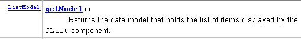
Nous en savons assez pour écrire l'application suivante :

Les composants de cette fenêtre sont les suivants :
n° | type | nom | rôle |
1 | JTextField | txtSaisie | champ de saisie |
2 | JList | jList1 | liste contenue dans un conteneur jScrollPane1 |
3 | JList | jList2 | liste contenue dans un conteneur jScrollPane2 |
4 | JButton | cmd1To2 | transfère les éléments sélectionnés de liste 1 vers liste 2 |
5 | JButton | cmd2To1 | fait l'inverse |
6 | JButton | cmdRaz1 | vide la liste 1 |
7 | JButton | cmdRaz2 | vide la liste 2 |
L'utilisateur tape du texte dans le champ (1) qu'il valide. Se produit alors l'événement actionPerformed sur le champ de saisie qui est utilisé pour ajouter le texte saisi dans la liste 1. Voici le code utile pour cette première fonction :
public class interfaceAppli extends JFrame {
JPanel contentPane;
JLabel jLabel1 = new JLabel();
JLabel jLabel2 = new JLabel();
JLabel jLabel3 = new JLabel();
JTextField txtSaisie = new JTextField();
JButton cmd1To2 = new JButton();
JButton cmd2To1 = new JButton();
DefaultListModel v1=new DefaultListModel();
DefaultListModel v2=new DefaultListModel();
JList jList1 = new JList(v1);
JList jList2 = new JList(v2);
JScrollPane jScrollPane1 = new JScrollPane();
JScrollPane jScrollPane2 = new JScrollPane();
JButton cmdRaz1 = new JButton();
JButton cmdRaz2 = new JButton();
JLabel jLabel4 = new JLabel();
/**Construire le cadre*/
public interfaceAppli() {
enableEvents(AWTEvent.WINDOW_EVENT_MASK);
try {
jbInit();
}
catch(Exception e) {
e.printStackTrace();
}
}//interfaceAppli
/**Initialiser le composant*/
private void jbInit() throws Exception {
...
txtSaisie.addActionListener(new java.awt.event.ActionListener() {
public void actionPerformed(ActionEvent e) {
txtSaisie_actionPerformed(e);
}
});
...
// Jlist1 est placé dans le conteneur jScrollPane1
jScrollPane1.getViewport().add(jList1, null);
// Jlist2 est placé dans le conteneur jScrollPane2
jScrollPane2.getViewport().add(jList2, null);
...
}
/**Remplacé, ainsi nous pouvons sortir quand la fenêtre est fermée*/
protected void processWindowEvent(WindowEvent e) {
...
}
void txtSaisie_actionPerformed(ActionEvent e) {
// le texte de la saisie a été validé
// on le récupère débarrassé de ses espaces de début et fin
String texte=txtSaisie.getText().trim();
// s'il est vide, on n'en veut pas
if(texte.equals("")){
// msg d'erreur
JOptionPane.showMessageDialog(this,"Vous devez taper un texte",
"Erreur",JOptionPane.WARNING_MESSAGE);
// fin
return;
}//if
// s'il n'est pas vide, on l'ajoute aux valeurs de la liste 1
v1.addElement(texte);
// et on vide le champ de saisie
txtSaisie.setText("");
}/// txtSaisie_actionperformed
}//classe
Le code de transfert des éléments sélectionnés d'une liste vers l'autre est le suivant :
void cmd1To2_actionPerformed(ActionEvent e) {
// transfert des éléments sélectionnés dans la liste 1 vers la liste 2
transfert(jList1,jList2);
}//cmd1To2
void cmd2To1_actionPerformed(ActionEvent e) {
// transfert des éléments sélectionnés dans jList2 vers jList1
transfert(jList2,jList1);
}//cmd2TO1
private void transfert(JList L1, JList L2){
// transfert des éléments sélectionnés dans la liste 1 vers la liste 2
// on récupère le tableau des indices des éléments sélectionnés dans L1
int[] indices=L1.getSelectedIndices();
// qq chose à faire ?
if (indices.length==0) return;
// on récupère les valeurs de L1
DefaultListModel v1=(DefaultListModel)L1.getModel();
// et celles de L2
DefaultListModel v2=(DefaultListModel)L2.getModel();
for(int i=indices.length-1;i>=0;i--){
// on ajoute à L2 les valeurs sélectionnées dans L1
v2.addElement(v1.elementAt(indices[i]));
// les éléments de L1 copiés dans L2 doivent être supprimés de L1
v1.removeElementAt(indices[i]);
}//for
}//transfert
Le code associé aux boutons Raz est des plus simples :
void cmdRaz1_actionPerformed(ActionEvent e) {
// vide liste 1
v1.removeAllElements();
}//cmd Raz1
void cmdRaz2_actionPerformed(ActionEvent e) {
// vide liste 2
v2.removeAllElements();
}///cmd Raz2
5.2.5.4. Cases à cocher JCheckBox, boutons radio JButtonRadio
Nous nous proposons d'écrire l'application suivante :

Les composants de la fenêtre sont les suivants :
n° | type | nom | rôle |
1 | JButtonRadio | jButtonRadio1 jButtonRadio2 jButtonRadio3 | 3 boutons radio faisant partie du groupe buttonGroup1 |
2 | JCheckBox | jCheckBox1 jCheckBox2 jCheckBox3 | 3 cases à cocher |
3 | JList | jList1 | une liste dans un conteneur jScrollPane1 |
4 | ButtonGroup | buttonGroup1 | composant non visible - sert à regrouper les 3 boutons radio afin que lorsque l'un d'eux s'allume, les autres s'éteignent. |
Un groupe de boutons radio peut se construire de la façon suivante :
- on place chacun des boutons radio sans se soucier de les regrouper
- on place dans le conteneur, un composant swing ButtonGroup. Ce composant est non visuel. Il n'apparaît donc pas dans le concepteur de la fenêtre. Il apparaît cependant dans sa structure :

On voit ci-dessus dans la branche Autre les attributs non visuels de la fenêtre. Une fois un groupe de boutons radio créé, on peut lui associer chacun des boutons radio. Pour ce faire, on sélectionne les propriétés du bouton radio :

et dans la propriété buttonGroup du bouton radio, on met le nom du groupe dans lequel on veut mettre le bouton radio, ici buttonGroup1. On répète cette opération pour les 3 boutons radio.
La principale méthode des boutons radio et cases à cocher est la méthode isSelected() qui indique si la case ou le bouton est coché. Le texte associé au composant peut être connu avec getText() et fixé avec setText(String unTexte). La case/bouton radio peut être coché avec la méthode setSelected(boolean value).
Lors d'un clic sur un bouton radio ou case à cocher, c'est l'événement actionPerformed qui est déclenché. Dans le code qui suit, nous utilisons cet événement pour suivre les changements de valeurs des boutons radio et cases à cocher :
public class interfaceAppli extends JFrame {
JPanel contentPane;
JRadioButton jRadioButton1 = new JRadioButton();
JRadioButton jRadioButton2 = new JRadioButton();
JRadioButton jRadioButton3 = new JRadioButton();
JCheckBox jCheckBox1 = new JCheckBox();
JCheckBox jCheckBox2 = new JCheckBox();
JCheckBox jCheckBox3 = new JCheckBox();
ButtonGroup buttonGroup1 = new ButtonGroup();
JScrollPane jScrollPane1 = new JScrollPane();
DefaultListModel valeurs=new DefaultListModel();
JList jList1 = new JList(valeurs);
/**Construire le cadre*/
public interfaceAppli() {
enableEvents(AWTEvent.WINDOW_EVENT_MASK);
try {
jbInit();
}
catch(Exception e) {
e.printStackTrace();
}
}
/**Initialiser le composant*/
private void jbInit() throws Exception {
jRadioButton1.setSelected(true);
jRadioButton1.setText("un");
jRadioButton1.setBounds(new Rectangle(57, 31, 49, 23));
jRadioButton1.addActionListener(new java.awt.event.ActionListener() {
public void actionPerformed(ActionEvent e) {
afficheRadioButtons(e);
}
});
jRadioButton2.setBounds(new Rectangle(113, 30, 49, 23));
jRadioButton2.addActionListener(new java.awt.event.ActionListener() {
public void actionPerformed(ActionEvent e) {
afficheRadioButtons(e);
}
});
jRadioButton2.setText("deux");
jRadioButton3.setBounds(new Rectangle(168, 30, 49, 23));
jRadioButton3.addActionListener(new java.awt.event.ActionListener() {
public void actionPerformed(ActionEvent e) {
afficheRadioButtons(e);
}
});
jRadioButton3.setText("trois");
// les boutons radio sont regroupés
buttonGroup1.add(jRadioButton1);
buttonGroup1.add(jRadioButton2);
buttonGroup1.add(jRadioButton3);
// cases à cocher
jCheckBox1.setText("A");
jCheckBox1.setBounds(new Rectangle(58, 69, 32, 17));
jCheckBox1.addActionListener(new java.awt.event.ActionListener() {
public void actionPerformed(ActionEvent e) {
afficheCases(e);
}
});
jCheckBox2.setBounds(new Rectangle(112, 69, 40, 17));
jCheckBox2.addActionListener(new java.awt.event.ActionListener() {
public void actionPerformed(ActionEvent e) {
afficheCases(e);
}
});
jCheckBox2.setText("B");
jCheckBox3.setText("C");
jCheckBox3.setBounds(new Rectangle(170, 69, 37, 17));
jCheckBox3.addActionListener(new java.awt.event.ActionListener() {
public void actionPerformed(ActionEvent e) {
afficheCases(e);
}
});
....
}
/**Remplacé, ainsi nous pouvons sortir quand la fenêtre est fermée*/
protected void processWindowEvent(WindowEvent e) {
...
}
private void afficheRadioButtons(ActionEvent e){
// affiche les valeurs des 3 boutons radio
valeurs.addElement("boutons radio=("+jRadioButton1.isSelected()+","+
jRadioButton2.isSelected()+","+jRadioButton3.isSelected()+")");
}//afficheRadioButtons
void afficheCases(ActionEvent e) {
// affiche les valeurs des cases à cocher
valeurs.addElement("cases à cocher=["+jCheckBox1.isSelected()+","+
jCheckBox2.isSelected()+","+jCheckBox3.isSelected()+")");
}//afficheCases
}//classe
Voici un exemple d'exécution :

5.2.5.5. composant JScrollBar
Réalisons l'application suivante :

n° | type | nom | rôle |
1 | JScrollBar | jScrollBar1 | un variateur horizontal |
2 | JScrollBar | jScrollBar2 | un variateur vertical |
3 | JTextField | txtvaleurHS | affiche la valeur du variateur horizontal 1 - permet aussi de fixer cette valeur |
4 | JTextField | txtvaleurVS | affiche la valeur du variateur vertical 2 - permet aussi de fixer cette valeur |
- Un variateur JScrollBar permet à l'utilisateur de choisir une valeur dans une plage de valeurs entières symbolisée par la "bande" du variateur sur laquelle se déplace un curseur.
- Pour un variateur horizontal, l'extrémité gauche représente la valeur minimale de la plage, l'extrémité droite la valeur maximale, le curseur la valeur actuelle choisie. Pour un variateur vertical, le minimum est représenté par l'extrémité haute, le maximum par l'extrémité basse. Le couple (min,max) vaut par défaut (0,100).
- Un clic sur les extrémités du variateur fait varier la valeur d'un incrément (positif ou négatif) selon l'extrémité cliquée appelée unitIncrement qui est par défaut 1.
- Un clic de part et d'autre du curseur fait varier la valeur d'un incrément (positif ou négatif) selon l'extrémité cliquée appelée blockIncrement qui est par défaut 10.
- Ces cinq valeurs (min, max, valeur, unitIncrement, blockIncrement) peuvent être connues avec les méthodes getMinimum(), getMaximum(), getValue(), getUnitIncrement(), getBlockIncrement() qui toutes rendent un entier et peuvent être fixées par les méthodes setMinimum(int min), setMaximum(int max), setValue(int val), setUnitIncrement(int uInc), setBlockIncrement(int bInc)
Il y a quelques points à connaître dans l'utilisation des composants JScrollBar. Tout d'abord, on le trouve dans la barre des composants swing :

Lorsqu'on le dépose sur le conteneur, il est par défaut vertical. On le rend horizontal avec la propriété orientation ci-dessous:

Sur la feuille de propriétés ci-dessus on voit qu'on a accès aux propriétés minimum, maximum, value, unitIncrement, blockIncrement du JScrollbar. On peut donc les fixer à la conception. Lorsqu'on place un scrollbar sur le conteneur sa "bande de variation" n'apparaît pas :

On peut régler ce problème en donnant une bordure au composant. Cela se fait avec sa propriété border qui peut avoir différentes valeurs :

Voici ce que donne par exemple RaisedBevel :

Lorsqu'on clique sur l'extrémité supérieure d'un variateur vertical, sa valeur diminue. Cela peut surprendre l'utilisateur moyen qui s'attend normalement à voir la valeur "monter". On règle ce problème en donnant une valeur négative à unitIncrement et blockIncrement.
Comment suivre les évolutions d'un variateur ? Lorsque la valeur de celui-ci change, l'événement adjustmentValueChanged se produit. Il suffit d'associer une procédure à cet événement pour être informé de chaque variation de la valeur du scrollbar.

Le code utile de notre application est le suivant :
....
public class cadreAppli extends JFrame {
JPanel contentPane;
JScrollBar jScrollBar1 = new JScrollBar();
Border border1;
JTextField txtValeurHS = new JTextField();
JScrollBar jScrollBar2 = new JScrollBar();
JTextField txtValeurVS = new JTextField();
TitledBorder titledBorder1;
/**Construire le cadre*/
public cadreAppli() {
enableEvents(AWTEvent.WINDOW_EVENT_MASK);
try {
jbInit();
}
catch(Exception e) {
e.printStackTrace();
}
}
/**Initialiser le composant*/
private void jbInit() throws Exception {
...
// une bordure pour les scrollbars
border1 = BorderFactory.createBevelBorder(BevelBorder.RAISED,Color.white,Color.white,new Color(134, 134, 134),new Color(93, 93, 93));
// pas de titre bour la bordure
titledBorder1 = new TitledBorder("");
jScrollBar1.setOrientation(JScrollBar.HORIZONTAL);
jScrollBar1.setBorder(BorderFactory.createRaisedBevelBorder());
jScrollBar1.setAutoscrolls(true);
jScrollBar1.setBounds(new Rectangle(37, 17, 218, 20));
jScrollBar1.addAdjustmentListener(new java.awt.event.AdjustmentListener() {
public void adjustmentValueChanged(AdjustmentEvent e) {
jScrollBar1_adjustmentValueChanged(e);
}
});
txtValeurHS.addActionListener(new java.awt.event.ActionListener() {
public void actionPerformed(ActionEvent e) {
txtValeurHS_actionPerformed(e);
}
});
jScrollBar2.setBounds(new Rectangle(39, 51, 30, 27));
jScrollBar2.addAdjustmentListener(new java.awt.event.AdjustmentListener() {
public void adjustmentValueChanged(AdjustmentEvent e) {
jScrollBar2_adjustmentValueChanged(e);
}
});
jScrollBar2.setAutoscrolls(true);
jScrollBar2.setUnitIncrement(-1);
jScrollBar2.setBorder(BorderFactory.createRaisedBevelBorder());
txtValeurVS.addActionListener(new java.awt.event.ActionListener() {
public void actionPerformed(ActionEvent e) {
txtValeurVS_actionPerformed(e);
}
});
......
}
/**Remplacé, ainsi nous pouvons sortir quand la fenêtre est fermée*/
protected void processWindowEvent(WindowEvent e) {
...
}
void jScrollBar1_adjustmentValueChanged(AdjustmentEvent e) {
// la valeur du scrollbar 1 a changé
txtValeurHS.setText(""+jScrollBar1.getValue());
}
void jScrollBar2_adjustmentValueChanged(AdjustmentEvent e) {
// la valeur du scrollbar 2 a changé
txtValeurVS.setText(""+jScrollBar2.getValue());
}
void txtValeurHS_actionPerformed(ActionEvent e) {
// on fixe la valeur du scrollbar horizontal
setValeur(jScrollBar1,txtValeurHS);
}
void txtValeurVS_actionPerformed(ActionEvent e) {
// on fixe la valeur du scrollbar vertical
setValeur(jScrollBar2,txtValeurVS);
}
private void setValeur(JScrollBar jS, JTextField jT){
// fixe la valeur du scrollbar jS avec le texte du champ jT
int valeur=0;
try{
valeur=Integer.parseInt(jT.getText());
jS.setValue(valeur);
}
catch (Exception e){
// on affiche l'erreur
afficher(""+e);
}//try-catch
}//setValeur
void afficher(String message){
// affiche un message dans une boîte
JOptionPane.showMessageDialog(this,message,"Menus",JOptionPane.INFORMATION_MESSAGE);
}//afficher
}
Voici un exemple d'exécution :

5.2.5.6. composant JTextArea
Le composant JTextArea est un composant où l'on peut entrer plusieurs lignes de texte contrairement au composant JTextField où l'on ne peut entrer qu'une ligne. Si ce composant est placé dans un conteneur défilant (JScrollPane) on a une champ de saisie de texte défilant. Ce type de composant pourrait se rencontrer par exemple dans une application de courrier électronique où le texte du message à envoyer serait tapé dans un composant JTextArea. Les méthodes usuelles sont String getText() pour connaître le contenu de la zone de texte, setText(String unTexte) pour mettre unTexte dans la zone de texte, append(String unTexte) pour ajouter unTexte au texte déjà présent dans la zone de texte. Considérons l'application suivante :

n° | type | nom | rôle |
1 | JTextArea | txtTexte | une zone de texte multilignes |
2 | JButton | cmdAfficher | affiche le contenu de 1 dans une boîte de dialogue |
3 | JButton | cmdEffacer | efface le contenu de 1 |
4 | JTextField | txtAjout | texte ajouté au texte de 1 lorsqu'il est validé par la touche Entrée. |
5 | JScrollPane | jScrollPane1 | conteneur défilant dans lequel on a placé la zone de texte 1 afin d'avoir une zone de texte défilante. |
Le code utile est le suivant :
.....
public class cadreAppli extends JFrame {
JPanel contentPane;
JLabel jLabel1 = new JLabel();
JButton cmdAfficher = new JButton();
JScrollPane jScrollPane1 = new JScrollPane();
JTextArea txtTexte = new JTextArea();
JLabel jLabel2 = new JLabel();
JTextField txtAjout = new JTextField();
JButton cmdEffacer = new JButton();
/**Construire le cadre*/
public cadreAppli() {
enableEvents(AWTEvent.WINDOW_EVENT_MASK);
try {
jbInit();
}
catch(Exception e) {
e.printStackTrace();
}
}
/**Initialiser le composant*/
private void jbInit() throws Exception {
cmdAfficher.addActionListener(new java.awt.event.ActionListener() {
public void actionPerformed(ActionEvent e) {
cmdAfficher_actionPerformed(e);
}
});
txtAjout.addActionListener(new java.awt.event.ActionListener() {
public void actionPerformed(ActionEvent e) {
txtAjout_actionPerformed(e);
}
});
cmdEffacer.addActionListener(new java.awt.event.ActionListener() {
public void actionPerformed(ActionEvent e) {
cmdEffacer_actionPerformed(e);
}
});
.......
jScrollPane1.getViewport().add(txtTexte, null);
}
/**Remplacé, ainsi nous pouvons sortir quand la fenêtre est fermée*/
protected void processWindowEvent(WindowEvent e) {
........
}
void cmdAfficher_actionPerformed(ActionEvent e) {
// affiche le contenu du TextArea
afficher(txtTexte.getText());
}
void afficher(String message){
// affiche un message dans une boîte
JOptionPane.showMessageDialog(this,message,"Suivi",JOptionPane.INFORMATION_MESSAGE);
}// afficher
void cmdEffacer_actionPerformed(ActionEvent e) {
txtTexte.setText("");
}//cmdEffacer_actionPerformed
void txtAjout_actionPerformed(ActionEvent e) {
// ajout de texte
txtTexte.append(txtAjout.getText());
// raz ajout
txtAjout.setText("");
}//
}
5.2.6. Événements souris
Lorsqu'on dessine dans un conteneur, il est important de connaître la position de la souris pour par exemple afficher un point lors d'un clic. Les déplacements de la souris provoquent des événements dans le conteneur dans lequel elle se déplace. Voici par exemple ceux proposés par JBuilder pour un conteneur JPanel :

mouseClicked | clic de souris |
mouseDragged | la souris se déplace, bouton gauche appuyé |
mouseEntered | la souris vient d'entrer dans la surface du conteneur |
mouseExited | la souris vient de quitter la surface du conteneur |
mouseMoved | la souris bouge |
mousePressed | Pression sur le bouton gauche de la souris |
mouseReleased | Relâchement du bouton gauche de la souris |
Voici un programme permettant de mieux appréhender à quels moments se produisent les différents événements souris :

n° | type | nom | rôle |
1 | JTextField | txtPosition | pour afficher la position de la souris dans le conteneur (évt MouseMoved) |
2 | JList | lstAffichage | pour afficher les évts souris autres que MouseMoved |
3 | JButton | cmdEffacer | pour effacer le contenu de 2 |
Lorsqu'on exécute ce programme, voici ce qu'on obtient pour un clic :

Les événements sont empilés par le haut dans la liste. Aussi la copie d'écran ci-dessus indique qu'un clic provoque trois événements, dans l'ordre :
- MousePressed lorsqu'on appuie sur le bouton
- MouseReleased lorsqu'on le lâche
- MouseClicked qui indique que la succession des deux événements précédents est considérée comme un clic. Ce pourrait être un double clic. Mais ci-dessus, l'information clickCount=1 indiqe que c'est un simple clic.
Maintenant si on appuie sur le bouton, déplace la souris et relâche le bouton :

On voit là les trois événements :
- MousePressed lorsqu'on appuie initialement sur le bouton
- MouseDragged lorsqu'on déplace la souris, bouton appuyé
- MouseReleased lorsqu'on lâche le bouton
Dans les deux exemples ci-dessus, on voit qu'un événement souris ramène avec lui diverses informations dont les coordonnées (x,y) de la souris, par exemple (408,65) dans la première ligne ci-dessus.
Si on continue ainsi, on découvre que l'événement MouseExited est déclenché dès que la souris quitte le conteneur ou passe sur l'un des composants de celui-ci. Dans ce dernier cas, le conteneur reçoit l'événement MouseExited et le composant l'événement MouseEntered. L'inverse se produira lorsque la souris quittera le composant pour revenir sur le conteneur.
Que se passe-t-il lors d'un double clic ?
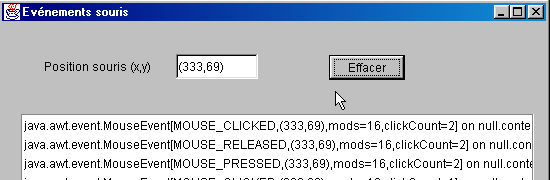
On a exactement les mêmes événements que pour un clic simple. Seulement l'événement rapporte avec lui l'information clickCount=2 (cf ci-dessus) indiquant qu'il y a eu en fait un double clic.
Le code utile de cette application est le suivant :
public class Cadre1 extends JFrame {
JPanel contentPane;
JLabel jLabel1 = new JLabel();
JTextField txtPosition = new JTextField();
JScrollPane jScrollPane1 = new JScrollPane();
DefaultListModel valeurs=new DefaultListModel();
JList lstAffichage = new JList(valeurs);
JButton cmdEffacer = new JButton();
/**Construire le cadre*/
public Cadre1() {
enableEvents(AWTEvent.WINDOW_EVENT_MASK);
try {
jbInit();
}
catch(Exception e) {
e.printStackTrace();
}
}
/**Initialiser le composant*/
private void jbInit() throws Exception {
contentPane.addMouseMotionListener(new java.awt.event.MouseMotionAdapter() {
public void mouseMoved(MouseEvent e) {
contentPane_mouseMoved(e);
}
public void mouseDragged(MouseEvent e) {
contentPane_mouseDragged(e);
}
});
contentPane.addMouseListener(new java.awt.event.MouseAdapter() {
public void mouseEntered(MouseEvent e) {
contentPane_mouseEntered(e);
}
public void mouseExited(MouseEvent e) {
contentPane_mouseExited(e);
}
public void mousePressed(MouseEvent e) {
contentPane_mousePressed(e);
}
public void mouseClicked(MouseEvent e) {
contentPane_mouseClicked(e);
}
public void mouseReleased(MouseEvent e) {
contentPane_mouseReleased(e);
}
});
cmdEffacer.addActionListener(new java.awt.event.ActionListener() {
public void actionPerformed(ActionEvent e) {
cmdEffacer_actionPerformed(e);
}
});
jScrollPane1.getViewport().add(lstAffichage, null);
...............
}
/**Remplacé, ainsi nous pouvons sortir quand la fenêtre est fermée*/
protected void processWindowEvent(WindowEvent e) {
.........
}
void contentPane_mouseMoved(MouseEvent e) {
txtPosition.setText("("+e.getX()+","+e.getY()+")");
}
void contentPane_mouseDragged(MouseEvent e) {
afficher(e);
}
void contentPane_mouseEntered(MouseEvent e) {
afficher(e);
}
void afficher(MouseEvent e){
// affiche l'évt e dans la liste lstAffichage
valeurs.insertElementAt(e,0);
}
void contentPane_mouseExited(MouseEvent e) {
afficher(e);
}
void contentPane_mousePressed(MouseEvent e) {
afficher(e);
}
void contentPane_mouseClicked(MouseEvent e) {
afficher(e);
}
void contentPane_mouseReleased(MouseEvent e) {
afficher(e);
}
void cmdEffacer_actionPerformed(ActionEvent e) {
// efface la liste
valeurs.removeAllElements();
}
}
5.2.7. Créer une fenêtre avec menu
Voyons maintenant comment créer une fenêtre avec menu avec Jbuilder. Nous allons créer la fenêtre suivante :


Créez un nouveau projet avec au départ une fenêtre vide. Choisissez dans la liste des composants "Conteneurs Swing" le composant JMenuBar (cf 1 ci-dessous) et déposez-le sur la fenêtre en cours de conception.

Rien n'apparaît dans la fenêtre de conception mais le composant JMenuBar apparaît dans la panneau de structure de votre fenêtre :

Double-cliquez sur l'élément jMenuBar1 ci-dessus pour avoir accès au menu en mode conception :

1 | insérer un élément de menu |
2 | insérer un séparateur |
3 | insérer un menu imbriqué |
4 | supprimer un élément de menu |
5 | désactiver un élément de menu |
6 | élément de menu à cocher |
7 | inverser le bouton radio |
Pour créer votre premier élément de menu, tapez "Options A" dans la case A ci-dessus, puis dessous dans l'ordre : A1, A2, séparateur, A3, A4.

Puis à côté :

Utilisez l'outil 3 pour indiquer que B3 est un sous-menu imbriqué.
Au fur et à mesure de la conception du menu, la structure logique de notre fenêtre évolue :

Si nous exécutons notre application maintenant, nous verrons une fenêtre vide sans menu. Il nous faut associer le menu créé à notre fenêtre. Pour ce faire, dans la structure de la fenêtre, sélectionnez l'objet this :

Vous avez alors accès aux propriétés de this :

L'une de celles-ci est JMenuBar qui sert à fixer le menu qui sera associé à la fenêtre. Cliquez dans la cellule à droite de JMenuBar. Tous les menus créés vous seront alors proposés. Ici, nous n'aurons que jMenuBar1. Sélectionnez-le.
Lancez l'exécution de l'application (F9) :

Maintenant, on a un menu mais les options ne font, pour l'instant, rien. Les options de menu sont traitées comme des composants : elles ont des propriétés et des événements. Dans la structure du menu, sélectionnez l'option jMenuItem1 :

Vous avez alors accès à ses propriétés et événements :

Sélectionnez la page des événements et cliquez sur la cellule à droite de l'événement actionPerformed : c'est l'événement qui se produit lorsqu'on clique sur un élément de menu. Une procédure de traitement vous est proposée par défaut. Double-cliquez dessus pour avoir accès à son code :
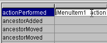
Nous écrirons le simple code suivant :
void jMenuItem1_actionPerformed(ActionEvent e) {
afficher("L'option A1 a été sélectionnée");
}
void afficher(String message){
// affiche un message dans une boîte
JOptionPane.showMessageDialog(this,message,"Menus",JOptionPane.INFORMATION_MESSAGE);
}//afficher
Exécutez l'application et sélectionnez l'option A1 pour obtenir le message suivant :

Le code utile de cette application est le suivant :
.....
public class Cadre1 extends JFrame {
JPanel contentPane;
BorderLayout borderLayout1 = new BorderLayout();
JMenuBar jMenuBar1 = new JMenuBar();
JMenu jMenu1 = new JMenu();
JMenuItem jMenuItem1 = new JMenuItem();
JMenuItem jMenuItem2 = new JMenuItem();
JMenuItem jMenuItem3 = new JMenuItem();
JMenuItem jMenuItem4 = new JMenuItem();
JMenu jMenu2 = new JMenu();
JMenuItem jMenuItem5 = new JMenuItem();
JMenuItem jMenuItem6 = new JMenuItem();
JMenu jMenu3 = new JMenu();
JMenuItem jMenuItem7 = new JMenuItem();
JMenuItem jMenuItem8 = new JMenuItem();
JMenuItem jMenuItem9 = new JMenuItem();
/**Construire le cadre*/
public Cadre1() {
enableEvents(AWTEvent.WINDOW_EVENT_MASK);
try {
jbInit();
}
catch(Exception e) {
e.printStackTrace();
}
}
/**Initialiser le composant*/
private void jbInit() throws Exception {
// la fenêtre est associée à un menu
this.setJMenuBar(jMenuBar1);
jMenu1.setText("Options A");
jMenuItem1.setText("A1");
jMenuItem1.addActionListener(new java.awt.event.ActionListener() {
public void actionPerformed(ActionEvent e) {
jMenuItem1_actionPerformed(e);
}
});
jMenuItem2.setText("A2");
jMenuItem3.setText("A3");
jMenuItem4.setText("A4");
jMenu2.setText("Options B");
jMenuItem5.setText("B1");
jMenuItem6.setText("B2");
jMenu3.setText("B3");
jMenuItem7.setText("B31");
jMenuItem8.setText("B32");
jMenuItem9.setText("B4");
jMenuBar1.add(jMenu1);
jMenuBar1.add(jMenu2);
jMenu1.add(jMenuItem1);
jMenu1.add(jMenuItem2);
jMenu1.addSeparator();
jMenu1.add(jMenuItem3);
jMenu1.add(jMenuItem4);
jMenu2.add(jMenuItem5);
jMenu2.add(jMenuItem6);
jMenu2.add(jMenu3);
jMenu2.add(jMenuItem9);
jMenu3.add(jMenuItem7);
jMenu3.add(jMenuItem8);
}
/**Remplacé, ainsi nous pouvons sortir quand la fenêtre est fermée*/
protected void processWindowEvent(WindowEvent e) {
....
}
void jMenuItem1_actionPerformed(ActionEvent e) {
afficher("L'option A1 a été sélectionnée");
}
void afficher(String message){
// affiche un message dans une boîte
JOptionPane.showMessageDialog(this,message,"Menus",JOptionPane.INFORMATION_MESSAGE);
}//afficher
}
5.3. Boîtes de dialogue
5.3.1. Boîtes de message
Nous avons déjà utilisé la classe JOptionPane afin d'afficher des messages. Ainsi le code suivant :
import javax.swing.*;
public class dialog1 {
public static void main(String arg[]){
JOptionPane.showMessageDialog(null,"Un message","Titre de la boîte",JOptionPane.INFORMATION_MESSAGE);
}
}
produit l'affichage de la boîte suivante :
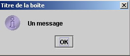
Lorsqu'on ferme cette fenêtre, elle disparaît mais le thread d'exécution dans laquelle elle s'exécutait lui n'est pas arrêté. Ce phénomène ne se produit normalement pas. Les boîtes de dialogue sont utilisées au sein d'une application qui à un moment ou à un autre utilise une instruction System.exit(n) pour arrêter tous les threads. On s'en souviendra dans les exemples à venir tous bâtis sur le même modèle. Sous Dos, l'application peut être interrompue par Ctrl-C. Avec JBuilder, on utilisera l'option Exécuter/Réinitialiser le programme (Ctrl-F2). Par ailleurs, le premier argument de showMessageDialog est ici null. En général ce n'est pas le cas. C'est plutôt this où this désigne la fenêtre principale de l'application.
5.3.2. Looks and Feels
L'apparence de la boîte ci-dessus pourrait être différente. Il est possible de paramétrer cette apparence via la classe javax.swing.UIManager. Lorsque nous avons commenté le code généré par JBuilder pour notre première fenêtre nous avons rencontré une instruction sur laquelle nous ne nous sommes pas attardés :
La méthode setLookAndFeel de la classe UIManager (UI=User Interface) permet de fixer l'apparence des interfaces graphiques. La classe UIManager dispose d'une méthode permettant de connaître les "apparences" possibles pour les interfaces :
static UIManager.LookAndFeelInfo[] | getInstalledLookAndFeels() |
La méthode rend un tableau d'éléments de type LookAndFeelInfo. Cette classe a une méthode :
String | getClassName() |
qui donne le nom de la classe "implémentant" une apparence donnée. Essayons le programme suivant :
import javax.swing.*;
public class LookAndFeels {
// affiche les look and feels disponibles
public static void main(String[] args) {
// iste des look and feels installés
UIManager.LookAndFeelInfo[] lf=UIManager.getInstalledLookAndFeels();
// affichage
for(int i=0;i<lf.length;i++){
System.out.println(lf[i].getClassName());
}//for
}//main
}//classe
Il donne les résultats suivants :
javax.swing.plaf.metal.MetalLookAndFeel
com.sun.java.swing.plaf.motif.MotifLookAndFeel
com.sun.java.swing.plaf.windows.WindowsLookAndFeel
Il semble donc y avoir trois "apparences "différentes". Reprenons notre programme d'affichage de messages en essayant les différentes apparences possibles :
import javax.swing.*;
public class LookAndFeel2 {
// affiche les look and feels disponibles
public static void main(String[] args) {
// liste des look and feels installés
UIManager.LookAndFeelInfo[] lf=UIManager.getInstalledLookAndFeels();
// affichage
for(int i=0;i<lf.length;i++){
// gestionnaire d'apparence
try{
UIManager.setLookAndFeel(lf[i].getClassName());
}catch(Exception ex){
System.err.println(ex.getMessage());
}//catch
// message
JOptionPane.showMessageDialog(null,"Un message",lf[i].getClassName(),JOptionPane.INFORMATION_MESSAGE);
}//for
}//main
}//classe
L'exécution donne les affichages suivants :
 | 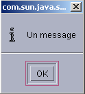 |  |
correspondant de droite à gauche aux "looks" Metal, Motif, Windows.
5.3.3. Boîtes de confirmation
La classe JOptionPane a une méthode showConfirmDialog pour afficher des boîtes de confirmation avec les boutons Oui, Non, Annuler. Il y a plusieurs méthodes showConfirmDialog surchargées. Nous en étudions une :
static int | showConfirmDialog(Component parentComponent, Object message, String title, int optionType) |
parentComponent | le composant parent de la boîte de dialogue. Souvent la fenêtre ou la valeur null |
message | le message à afficher |
title | le titre de la boîte |
optionType | JOptionPane.YES_NO_OPTION : boutons oui, non JOptionPane.YES_NO_CANCEL_OPTION : boutons oui, non, annuler |
Le résultat rendu par la méthode est :
JOptionPane.YES_OPTION | l'utilisateur a cliqué sur oui |
JOptionPane.NO_OPTION | l'utilisateur a cliqué sur non |
JOptionPane.CANCEL_OPTION | l'utilisateur a cliqué sur annuler |
JOptionPane.CLOSED_OPTION | l'utilisateur a fermé la boîte |
Voici un exemple :
import javax.swing.*;
public class confirm1 {
public static void main(String[] args) {
// affiche des boîtes de confirmation
int réponse;
affiche(JOptionPane.showConfirmDialog(null,"Voulez-vous continuer ?","Confirmation",JOptionPane.YES_NO_OPTION));
affiche(JOptionPane.showConfirmDialog(null,"Voulez-vous continuer ?","Confirmation",JOptionPane.YES_NO_CANCEL_OPTION));
}//main
private static void affiche(int réponse){
// indique quel type de réponse on a eu
switch(réponse){
case JOptionPane.YES_OPTION :
System.out.println("Oui");
break;
case JOptionPane.NO_OPTION :
System.out.println("Non");
break;
case JOptionPane.CANCEL_OPTION :
System.out.println("Annuler");
break;
case JOptionPane.CLOSED_OPTION :
System.out.println("Fermeture");
break;
}//switch
}//affiche
}//classe
 |  |
Sur la console, on obtient l'affichage des messages Non et Annuler.
5.3.4. Boîte de saisie
La classe JOptionPane offre également la possibilité de faire une saisie avec la méthode showInputDialog. Là encore, il existe plusieurs méthodes surchargées. Nous présentons l'une d'entre-elles :
static String | showInputDialog(Component parentComponent, Object message, String title, int messageType) |
Les arguments sont ceux déjà rencontrés plusieurs fois. La méthode rend la chaîne de caractères tapée par l'utilisateur. Voici un exemple :
import javax.swing.*;
public class input1 {
public static void main(String[] args) {
// saisie
System.out.println("Chaîne saisie ["+
JOptionPane.showInputDialog(null,"Quel est votre nom","Saisie du nom",JOptionPane.QUESTION_MESSAGE )
+ "]");
}//main
}//classe
L'affichage de la boîte de saisie :

L'affichage console :
5.4. Boîtes de sélection
Nous nous intéressons maintenant à un certain nombre de boîtes de sélection prédéfinies dans Java 2 :
boîte de sélection permettant de désigner un fichier dans l'arborescence des fichiers | |
JColorChooser | boîte de sélection permettant de choisir une couleur |
5.4.1. Boîte de sélection JFileChooser
Nous allons construire l'application suivante :

Les contrôles sont les suivants :
N° | type | nom | rôle |
0 | JScrollPane | jScrollPane1 | Conteneur défilant pour la boîte de texte 1 |
1 | JTextArea lui-même dans le JScrollPane | txtTexte | texte tapé par l'utilisateur ou chargé à partir d'un fichier |
2 | JButton | btnSauvegarder | permet de sauvegarder le texte de 1 dans un fichier texte |
3 | JButton | btnCharger | permet de charger le contenu d'un fichier texte dans 1 |
4 | JButton | btnEffacer | efface le contenu de 1 |
Un contrôle non visuel est utilisé : jFileChooser1. Celui-ci est pris dans la palette des conteneurs swing de JBuilder :

Nous déposons le composant dans la fenêtre de conception mais en-dehors du formulaire. Il apparaît dans la liste des composants :

Nous donnons maintenant le code utile du programme pour en avoir une vue d'ensemble :
import java.awt.*;
import java.awt.event.*;
import javax.swing.*;
import javax.swing.filechooser.FileFilter;
import java.io.*;
public class dialogues extends JFrame {
// les composants du cadre
JPanel contentPane;
JButton btnSauvegarder = new JButton();
JButton btnCharger = new JButton();
JButton btnEffacer = new JButton();
JScrollPane jScrollPane1 = new JScrollPane();
JTextArea txtTexte = new JTextArea();
JFileChooser jFileChooser1 = new JFileChooser();
// les filtres de fichiers
javax.swing.filechooser.FileFilter filtreTxt = null;
//Construire le cadre
public dialogues() {
enableEvents(AWTEvent.WINDOW_EVENT_MASK);
try {
jbInit();
// autres initialisations
moreInit();
}
catch(Exception e) {
e.printStackTrace();
}
}
// moreInit
private void moreInit(){
// initialisations à la construction de la fenêtre
// filtre *.txt
filtreTxt = new javax.swing.filechooser.FileFilter(){
public boolean accept(File f){
// accepte-t-on f ?
return f.getName().toLowerCase().endsWith(".txt");
}//accept
public String getDescription(){
// description du filtre
return "Fichiers Texte (*.txt)";
}//getDescription
};
// on ajoute le filtre
jFileChooser1.addChoosableFileFilter(filtreTxt);
// on veut aussi le filtre de tous les fichiers
jFileChooser1.setAcceptAllFileFilterUsed(true);
// on fixe le répertoire de départ de la boîte FileChooser au répertoire courant
jFileChooser1.setCurrentDirectory(new File("."));
}
//Initialiser le composant
private void jbInit() throws Exception {
.......................
}
//Remplacé, ainsi nous pouvons sortir quand la fenêtre est fermée
protected void processWindowEvent(WindowEvent e) {
......................
}
}
void btnCharger_actionPerformed(ActionEvent e) {
// choix d'un fichier à l'aide d'un objet JFileChooser
// on fixe le filtre initial
jFileChooser1.setFileFilter(filtreTxt);
// on affiche la boîte de sélection
int returnVal = jFileChooser1.showOpenDialog(this);
// l'utilisateur a-t-il choisi qq chose ?
if(returnVal == JFileChooser.APPROVE_OPTION) {
// on met le fichier dans le champ texte
lireFichier(jFileChooser1.getSelectedFile());
}//if
}//btnCharger_actionPerformed
// lireFichier
private void lireFichier(File fichier){
// affiche le contenu du fichier texte fichier dans le champ texte
// on efface le champ texte
txtTexte.setText("");
// qqs données
BufferedReader IN=null;
String ligne=null;
try{
// ouverture fichier en lecture
IN=new BufferedReader(new FileReader(fichier));
// on lit le fichier ligne par ligne
while((ligne=IN.readLine())!=null){
txtTexte.append(ligne+"\n");
}//while
// fermeture fichier
IN.close();
}catch(Exception ex){
// une erreur s'est produite
txtTexte.setText(""+ex);
}//catch
}
// effacer
void btnEffacer_actionPerformed(ActionEvent e) {
// on efface la boîte de texte
txtTexte.setText("");
}
// sauvegarder
void btnSauvegarder_actionPerformed(ActionEvent e) {
// sauvegarde le contenu de la boîte de texte dans un fichier
// on fixe le filtre initial
jFileChooser1.setFileFilter(filtreTxt);
// on affiche la boîte de sélection de sauvegarde
int returnVal = jFileChooser1.showSaveDialog(this);
// l'utilisateur a-t-il choisi qq chose ?
if(returnVal == JFileChooser.APPROVE_OPTION) {
// on écrit le contenu de la boîte de texte dans fichier
écrireFichier(jFileChooser1.getSelectedFile());
}//if
}
// lireFichier
private void écrireFichier(File fichier){
// écrit le contenu de la boîte de texte dans fichier
// qqs données
PrintWriter PRN=null;
try{
// ouverture fichier en écriture
PRN=new PrintWriter(new FileWriter(fichier));
// on écrit le contenu de la boîte de texte
PRN.print(txtTexte.getText());
// fermeture fichier
PRN.close();
}catch(Exception ex){
// une erreur s'est produite
txtTexte.setText(""+ex);
}//catch
}
Nous ne commenterons pas le code des méthodes btnEffacer_Click, lireFichier et écrireFichier qui n'amènent rien qui n'a déjà été vu. Nous nous attarderons sur la classe JFileChooser et son utilisation. Cette classe est complexe, du genre "usine à gaz". Nous n'utilisons ici que les méthodes suivantes :
addChoosableFilter(FileFilter) | fixe les types de fichiers proposés à la sélection |
setAcceptAllFileFilterUsed(boolean) | indique si le type 'Tous les fichiers" doit être proposé à la sélection ou non |
File getSelectedFile() | le fichier (File) choisi par l'utilisateur |
int showSaveDialog() | méthode qui affiche la boîte de sélection de sauvegarde. Rend un résultat de type int. La valeur jFileChooser.APPROVE_OPTION indique que l'utilisateur a fait un choix valide. Sinon, il a soit annulé le choix, soit une erreur s'est produite. |
setCurrentDirectory | pour fixer le répertoire initial à partir duquel l'utilisateur va commencer à explorer le système de fichiers |
setFileFilter(FileFilter) | pour fixer le filtre actif |
La méthode showSaveDialog affiche une boîte de sélection analogue à la suivante :

1 | liste déroulante construite avec la méthode addChoosableFilter. Elle contient ce qu'on appelle des filtres de sélection représentés par la classe FileFilter. C'est au développeur de définir ces filtres et de les ajouter à la liste 1. |
2 | dossier courant, fixé par la méthode setCurrentDirectory si cette méthode a été utilisée, sinon le répertoire courant sera le dossier "Mes Documents" sous windows ou le home Directory sous Unix. |
3 | nom du fichier choisi ou tapé directement par l'utilisateur. Sera disponible avec la méthode getSelectedFile() |
4 | boutons Enregistrer/Annuler. Si le bouton Enregistrer est utilisé, la méthode showSaveDialog rend le résultat jFileChooser.APPROVE_OPTION |
Comment les filtres de fichiers de la liste déroulante 1 sont-ils construits ? Les filtres sont ajoutés à la liste 1 à l'aide de la méthode :
addChoosableFilter(FileFilter) | fixe les types de fichiers proposés à la sélection |
de la classe JFileChooser. Il nous reste à connaître la classe FileFilter. C'est en fait la classe javax.swing.filechooser.FileFilter qui est une classe abstraite, c.a.d. une classe qui ne peut être instantiée mais seulement dérivée. Elle est définie comme suit :
FileFilter() | constructeur |
boolean accept(File) | indique si le fichier f appartient au filtre ou non |
String getDescription() | chaîne de description du filtre |
Prenons un exemple. Nous voulons que la liste déroulante 1 offre un filtre pour sélectionner les fichiers *.txt avec la description "Fichiers texte (*.txt)".
- il nous faut créer une classe dérivée de la classe FileFilter
- utiliser la méthode boolean accept(File f) pour rendre la valeur true si le nom du fichier f se termine par .txt
- utiliser la méthode String getDescription() pour rendre la description "Fichiers texte (*.txt)"
Ce filtre pourrait être défini dans notre application de la façon suivante :
javax.swing.filechooser.FileFilter filtreTxt = new javax.swing.filechooser.FileFilter(){
public boolean accept(File f){
// accepte-t-on f ?
return f.getName().toLowerCase().endsWith(".txt");
}//accept
public String getDescription(){
// description du filtre
return "Fichiers Texte (*.txt)";
}//getDescription
};
Ce filtre serait ajouté à la liste des filtres de l'objet jFileChooser1 par l'instruction :
Tout ceci et quelques autres initialisations sont faites dans la méthode moreInit exécutée à la construction de la fenêtre (cf programme complet ci-dessus). Le code du bouton Sauvegarder est le suivant :
void btnSauvegarder_actionPerformed(ActionEvent e) {
// sauvegarde le contenu de la boîte de texte dans un fichier
// on fixe le filtre initial
jFileChooser1.setFileFilter(filtreTxt);
// on affiche la boîte de sélection de sauvegarde
int returnVal = jFileChooser1.showSaveDialog(this);
// l'utilisateur a-t-il choisi qq chose ?
if(returnVal == JFileChooser.APPROVE_OPTION) {
// on écrit le contenu de la boîte de texte dans fichier
écrireFichier(jFileChooser1.getSelectedFile());
}//if
}
La séquence des opérations est la suivante :
- on fixe le filtre actif au filtre *.txt afin de permettre à l'utilisateur de chercher de préférence ce type de fichiers. Le filtre "Tous les fichiers" est également présent. Il a été ajouté dans la procédure moreInit. On a donc deux filtres.
- la boîte de sélection de sauvegarde est affichée. Ici on perd la main, l'utilisateur utilisant la boîte de sélection pour désigner un fichier du système de fichiers.
- lorsqu'il quitte la boîte de sélection, on teste la valeur de retour pour voir si on doit ou non sauvegarder la boîte de texte. Si oui, elle doit l'être dans le fichier obtenu par la méthode getSelectedFile.
Le code lié au bouton "Charger" est très analogue au code du bouton "Sauvegarder".
void btnCharger_actionPerformed(ActionEvent e) {
// choix d'un fichier à l'aide d'un objet JFileChooser
// on fixe le filtre initial
jFileChooser1.setFileFilter(filtreTxt);
// on affiche la boîte de sélection
int returnVal = jFileChooser1.showOpenDialog(this);
// l'utilisateur a-t-il choisi qq chose ?
if(returnVal == JFileChooser.APPROVE_OPTION) {
// on met le fichier dans le champ texte
lireFichier(jFileChooser1.getSelectedFile());
}//if
}//btnCharger_actionPerformed
Il y a deux différences :
- pour afficher la boîte de sélection de fichiers, on utilise la méthode showOpenDialog au lieu de la méthode showSaveDialog. La boîte de sélection affichée est analogue à celle affichée par la méthode showSaveDialog.
- si l'utilisateur a bien sélectionné un fichier, on appelle la méthode lireFichier plutôt que la méthode écrireFichier.
5.4.1.1. Boîtes de sélection JColorChooser et JFontChooser
Nous continuons l'exemple précédent en ajoutant deux nouveaux boutons :

N° | type | nom | rôle |
6 | JButton | btnCouleur | pour fixer la couleur des caractères du TextBox |
7 | JButton | btnPolice | pour fixer la police de caractères du TextBox |
Le composant JColorChooser permettant d'afficher une boîte de sélection de couleur peut être trouvée dans la liste des composants swing de JBuilder :

Nous déposons ce composant dans la fenêtre de conception, mais en-dehors du formulaire. Il est non visible dans le formulaire mais néanmoins présent dans la liste des composants de la fenêtre :
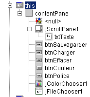
La classe JColorChooser est très simple. On affiche la boîte de sélection des couleurs avec la méthode int showDialog :
static Color | showDialog(Component component, String title, Color initialColor) |
Component component | le composant parent de la boîte de sélection, généralement une fenêtre JFrame |
String title | le titre dans la barre de titre de la boîte de sélection |
Color intialColor | couleur initialement sélectionnée dans la boîte de sélection |
Si l'utilisateur choisit une couleur, la méthode rend une couleur sinon la valeur null. Le code lié au bouton Couleur est le suivant :
void btnCouleur_actionPerformed(ActionEvent e) {
// choix d'une couleur de texte à l'aide du composant JColorChooser
Color couleur;
if((couleur=jColorChooser1.showDialog(this,"Choix d'une couleur",Color.BLACK))!=null){
// on fixe la couleur des caractères de la boîte de texte
txtTexte.setForeground(couleur);
}//if
}
La classe Color est définie dans java.awt.Color. Diverses constantes y sont définies dont Color.BLACK pour la couleur noire. La boîte de sélection affichée est la suivante

Assez curieusement, la bibliothèque swing n'offre pas de classe pour sélectionner une police de caractères. Heureusement, il y a les ressources Java d'internet. En effectuant une recherche sur le mot clé "JFontChooser" qui semble un nom possible pour une telle classe on en trouve plusieurs. L'exemple qui va suivre va nous donner l'occasion de configurer JBuilder pour qu'il utilise des paquetages non prévus dans sa configuration initiale.
Le paquetage récupéré s'appelle swingextras.jar et a été placé dans le dossier <jdk>\jre\lib\perso où <jdk> désigne le répertoire d'installation du jdk utilisé par JBuilder. Il aurait pu être placé n'importe où ailleurs.
 |  |
Regardons le contenu du paquetage SwingExtras.jar :

On y trouve le code source java des composants proposés dans le paquetage. On y trouve également les classes elles-mêmes :
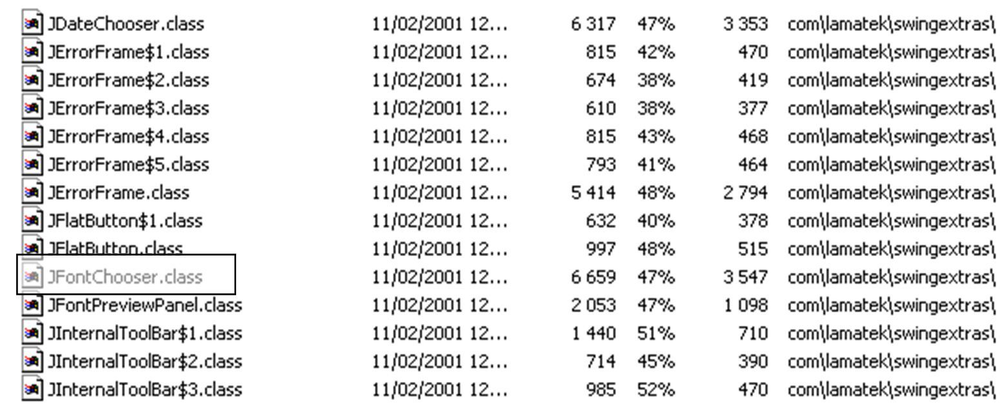
De cette archive, on retiendra que la classe JFontChooser s'appelle en réalité com.lamatek.swingextras.JFontChooser. Si on ne souhaite pas écrire le nom complet, il nous faudra écrire en début de programme :
Comment feront le compilateur et la machine virtuelle Java pour trouver ce nouveau paquetage ? Dans le cas d'une utilisation directe du JDK cela a déjà été expliqué et le lecteur pourra retrouver les explications dans le paragraphe sur les paquetages Java. Nous détaillons ici la méthode à utiliser avec JBuilder. Les paquetages sont configurés dans le menu Options/Configurer les JDK :

1 | Le bouton Modifier (1) permet d'indiquer à JBuilder quel JDK utilisé. Dans cet exemple, JBuilder avait amené avec lui le JDK 1.3.1. Lorsque le JDK 1.4 est sorti, il a été installé séparément de JBuilder et on a utilisé le bouton Modifier pour indiquer à JBuilder d'utiliser désormais le JDK 1.4 en désignant le répertoire d'installation de ce dernier |
2 | répertoire de base du JDK actuellement utilisé par JBuilder |
3 | liste des archives java (.jar) utilisées par JBuilder. On peut en ajouter d'autres avec le bouton Ajouter (4) |
4 | Le bouton Ajouter (4) permet d'ajouter de nouveaux paquetages que JBuilder utilisera à la fois pour la compilation et l'exécution des programmes. On l'a utilisé ici pour ajouter le paquetage SwingExtras.jar (5) |
Maintenant JBuilder est correctement configuré pour pouvoir utiliser la classe JFontChooser. Cependant, il nous faudrait avoir accès à la définition de cette classe pour l'utiliser correctement. L'archive swingextras.jar contient des fichiers html qu'on pourrait extraire pour les exploiter. C'est inutile. La documentation java incluse dans les fichiers .jar est directement accessible de JBuilder. Il faut pour cela configurer l'onglet Documentation (6) ci-dessus. On obtient la nouvelle fenêtre suivante :

Le bouton Ajouter nous permet d'indiquer que le fichier SwingExtras.jar doit être exploré pour la documentation. Cette démarche validée, on peut constater qu'on a effectivement accès à la documentation de SwingExtras.jar. Cela se traduit par diverses facilités :
- si on commence à écrire l'instruction d'importation
on pourra constater que JBuilder nous fournit une aide :

Le paquetage com.lamatek est bien trouvé.
- si maintenant sur le programme suivant :
on fait F1 sur le mot clé JFontChooser, on obtient une aide sur cette classe :

On voit dans la barre d'état 1 que c'est bien un fichier html du paquetage swingextras.jar qui est utilisé. L'exemple présenté ci-dessus est suffisament explicite pour qu'on puisse écrire le code du bouton Police de notre application :
void btnPolice_actionPerformed(ActionEvent e) {
// choix d'une police de texte à l'aide du composant JFontChooser
jFontChooser1 = new JFontChooser(new Font("Arial", Font.BOLD, 12));
if (jFontChooser1.showDialog(this, "Choix d'une police") == JFontChooser.ACCEPT_OPTION) {
// on change la police des caractères de la boîte de texte
txtTexte.setFont(jFontChooser1.getSelectedFont());
}//if
}
La boîte de sélection affichée par la méthode showDialog ci-dessus est la suivante :

5.5. L'application graphique IMPOTS
On reprend l'application IMPOTS déjà traitée deux fois. Nous y ajoutons maintenant une interface graphique :

Les contrôles sont les suivants
n° | type | nom | rôle |
1 | JRadioButton | rdOui | coché si marié |
2 | JRadioButton | rdNon | coché si pas marié |
3 | JSpinner | spinEnfants | nombre d'enfants du contribuable Minimum=0, Maximum=20, Increment=1 |
4 | JTextField | txtSalaire | salaire annuel du contribuable en F |
5 | JLabel | lblImpots | montant de l'impôt à payer |
6 | JTextField | txtStatus | champ de messages d'état - pas modifiable |
Le menu est le suivant :
option principale | option secondaire | nom | rôle |
Impots | |||
Initialiser | mnuInitialiser | charge les données nécessaires au calcul à partir d'un fichier texte | |
Calculer | mnuCalculer | calcule l'impôt à payer lorsque toutes les données nécessaires sont présentes et correctes | |
Effacer | mnuEffacer | remet le formulaire dans son état initial | |
Quitter | mnuQuitter | termine l'application |
Règles de fonctionnement
- le menu Calculer reste éteint tant qu'il n'y a rien dans le champ du salaire
- si lorsque le calcul est lancé, il s'avère que le salaire est incorrect, l'erreur est signalée :

Le programme est donné ci-dessous. Il utilise la classe impots créée dans le chapitre sur les classes. Une partie du code produit automatiquement pas JBuilder n'a pas été ici reproduit.
import java.awt.*;
import java.awt.event.*;
import javax.swing.*;
import javax.swing.filechooser.FileFilter;
import java.io.*;
import java.util.*;
import javax.swing.event.*;
public class frmImpots extends JFrame {
// les composants de la fenêtre
JPanel contentPane;
JMenuBar jMenuBar1 = new JMenuBar();
JMenu jMenu1 = new JMenu();
JMenuItem mnuInitialiser = new JMenuItem();
JMenuItem mnuCalculer = new JMenuItem();
JMenuItem mnuEffacer = new JMenuItem();
JMenuItem mnuQuitter = new JMenuItem();
JLabel jLabel1 = new JLabel();
JFileChooser jFileChooser1 = new JFileChooser();
JTextField txtStatus = new JTextField();
JRadioButton rdOui = new JRadioButton();
JRadioButton rdNon = new JRadioButton();
JLabel jLabel2 = new JLabel();
JLabel jLabel3 = new JLabel();
JTextField txtSalaire = new JTextField();
JLabel jLabel4 = new JLabel();
JLabel jLabel5 = new JLabel();
JLabel lblImpots = new JLabel();
JLabel jLabel7 = new JLabel();
ButtonGroup buttonGroup1 = new ButtonGroup();
JSpinner spinEnfants=null;
FileFilter filtreTxt=null;
// les attributs de la classe
double[] limites=null;
double[] coeffr=null;
double[] coeffn=null;
impots objImpots=null;
//Construire le cadre
public frmImpots() {
enableEvents(AWTEvent.WINDOW_EVENT_MASK);
try {
jbInit();
}
catch(Exception e) {
e.printStackTrace();
}
// autres initialisations
moreInit();
}
// initialisation formulaire
private void moreInit(){
// menu Calculer inhibé
mnuCalculer.setEnabled(false);
// zones de saisie inhibées
txtSalaire.setEditable(false);
txtSalaire.setBackground(Color.WHITE);
// champ d'état
txtStatus.setBackground(Color.WHITE);
// spinner Enfants - entre 0 et 20 enfants
spinEnfants=new JSpinner(new SpinnerNumberModel(0,0,20,1));
spinEnfants.setBounds(new Rectangle(137,60,40,27));
contentPane.add(spinEnfants);
// filtre *.txt pour la boîte de sélection
filtreTxt = new javax.swing.filechooser.FileFilter(){
public boolean accept(File f){
// accepte-t-on f ?
return f.getName().toLowerCase().endsWith(".txt");
}//accept
public String getDescription(){
// description du filtre
return "Fichiers Texte (*.txt)";
}//getDescription
};
// on ajoute le filtre *.txt
jFileChooser1.addChoosableFileFilter(filtreTxt);
// on veut aussi le filtre de tous les fichiers
jFileChooser1.setAcceptAllFileFilterUsed(true);
// on fixe le répertoire de départ de la boîte FileChooser
jFileChooser1.setCurrentDirectory(new File("."));
}//moreInit
//Initialiser le composant
private void jbInit() throws Exception {
................
}
//Remplacé, ainsi nous pouvons sortir quand la fenêtre est fermée
protected void processWindowEvent(WindowEvent e) {
.....................
}
void mnuQuitter_actionPerformed(ActionEvent e) {
// on quitte l'application
System.exit(0);
}
void mnuInitialiser_actionPerformed(ActionEvent e) {
// on charge le fichier des données
// qu'on sélectionne avec la boîte de sélection JFileChooser1
jFileChooser1.setFileFilter(filtreTxt);
if (jFileChooser1.showOpenDialog(this)!=JFileChooser.APPROVE_OPTION)
return;
// on exploite le fichier sélectionné
try{
// lecture données
lireFichier(jFileChooser1.getSelectedFile());
// création de l'objet impots
objImpots=new impots(limites,coeffr,coeffn);
// confirmation
txtStatus.setText("Données chargées");
// le salaire peut être modifié
txtSalaire.setEditable(true);
// plus de chgt possible
mnuInitialiser.setEnabled(false);
}catch(Exception ex){
// problème
txtStatus.setText("Erreur : " + ex.getMessage());
// fin
return;
}//catch
}
private void lireFichier(File fichier) throws Exception {
// les tableaux de données
ArrayList aLimites=new ArrayList();
ArrayList aCoeffR=new ArrayList();
ArrayList aCoeffN=new ArrayList();
String[] champs=null;
// ouverture fichier en lecture
BufferedReader IN=new BufferedReader(new FileReader(fichier));
// on lit le fichier ligne par ligne
// elles sont de la forme limite coeffr coeffn
String ligne=null;
int numLigne=0; // n° de ligne courannte
while((ligne=IN.readLine())!=null){
// une ligne de plus
numLigne++;
// on décompose la ligne en champs
champs=ligne.split("\\s+");
// 3 champs ?
if(champs.length!=3)
throw new Exception("ligne " + numLigne + "erronée dans fichier des données");
// on récupère les trois champs
aLimites.add(champs[0]);
aCoeffR.add(champs[1]);
aCoeffN.add(champs[2]);
}//while
// fermeture fichier
IN.close();
// transfert des données dans des tableaux bornés
int n=aLimites.size();
limites=new double[n];
coeffr=new double[n];
coeffn=new double[n];
for(int i=0;i<n;i++){
limites[i]=Double.parseDouble((String)aLimites.get(i));
coeffr[i]=Double.parseDouble((String)aCoeffR.get(i));
coeffn[i]=Double.parseDouble((String)aCoeffN.get(i));
}//for
}
void mnuCalculer_actionPerformed(ActionEvent e) {
// calcul de l'impôt
// vérification salaire
int salaire=0;
try{
salaire=Integer.parseInt(txtSalaire.getText().trim());
if(salaire<0) throw new Exception();
}catch (Exception ex){
// msg d'erreur
txtStatus.setText("Salaire incorrect. Recommencez");
// focus sur champ erroné
txtSalaire.requestFocus();
// retour à l'interface
return;
}
// nbre d'enfants
Integer InbEnfants=(Integer)spinEnfants.getValue();
// calcul de l'impôt
lblImpots.setText(""+objImpots.calculer(rdOui.isSelected(),InbEnfants.intValue(),salaire));
// effacement msg d'état
txtStatus.setText("");
}
void txtSalaire_caretUpdate(CaretEvent e) {
// le salaire a changé - on met à jour le menu calculer
mnuCalculer.setEnabled(! txtSalaire.getText().trim().equals(""));
}
void mnuEffacer_actionPerformed(ActionEvent e) {
// raz du formulaire
rdNon.setSelected(true);
spinEnfants.getModel().setValue(new Integer(0));
txtSalaire.setText("");
mnuCalculer.setEnabled(false);
lblImpots.setText("");
}
}
Nous avons utilisé ici un composant disponible qu'à partir du JDK 1.4, le JSpinner. C'est un incrémenteur, qui permet ici à l'utilisateur de fixer le nombre d'enfants. Ce composant swing n'était pas disponible dans la barre des composants swing de JBuilder 6 utilisé pour le test. Cela n'empêche pas son utilisation même si les choses sont un peu plus compliquées que pour les composants disponibles dans la barre des composants. En effet, on ne peut déposer le composant JSpinner sur le formulaire lors de la conception. Il faut le faire à l'exécution. Regardons le code qui le fait :
// spinner Enfants - entre 0 et 20 enfants
spinEnfants=new JSpinner(new SpinnerNumberModel(0,0,20,1));
spinEnfants.setBounds(new Rectangle(137,60,40,27));
contentPane.add(spinEnfants);
La première ligne crée le composant JSpinner. Ce composant peut servir à diverses choses et pas seulement à un incrémenteur d'entiers comme ici. L'argument du constructeur JSpinner est ici un modèle d'incrémenteur de nombres acceptant quatre paramètres (valeur, min, max, incrément). Le composant a la forme suivante :

valeur | valeur initiale affichée dans le composant |
min | valeur minimale affichable dans le composant |
max | valeur maximale affichable dans le composant |
incrément | valeur d'incrément de la valeur affichée lorsqu'on utilise les flèches haut/bas du composant |
La valeur du composant est obtenue via sa méthode getValue qui rend un type Object. D'où quelques transtypages pour avoir l'entier dont on a besoin :
// nbre d'enfants
Integer InbEnfants=(Integer)spinEnfants.getValue();
// calcul de l'impôt
lblImpots.setText(""+objImpots.calculer(rdOui.isSelected(),
InbEnfants.intValue(),salaire));
Une fois le composant JSpinner défini, il est placé dans la fenêtre :
Avant toute chose, l'utilisateur doit utiliser l'option de menu Initialiser qui construit un objet impots avec le constructeur
de la classe impots. On rappelle que celle-ci a été définie en exemple dans le chapitre des classes. On s'y reportera si besoin est. Les trois tableaux nécessaires au constructeur sont remplis à partir du contenu d'un fichier texte ayant la forme suivante :
12620.0 | 0 | 0 |
13190 | 0.05 | 631 |
15640 | 0.1 | 1290.5 |
24740 | 0.15 | 2072.5 |
31810 | 0.2 | 3309.5 |
39970 | 0.25 | 4900 |
48360 | 0.3 | 6898.5 |
55790 | 0.35 | 9316.5 |
92970 | 0.4 | 12106 |
127860 | 0.45 | 16754.5 |
151250 | 0.50 | 23147.5 |
172040 | 0.55 | 30710 |
195000 | 0.60 | 39312 |
0 | 0.65 | 49062 |
Chaque ligne comprend trois nombres séparés par au moins un espace. Ce fichier texte est sélectionné par l'utilisateur à l'aide d'un composant JFileChooser. Une fois l'objet de type impots construit, il ne reste plus qu'à laisser l'utilisateur donner les trois informations dont on a besoin : marié ou non, nombre d'enfants, salaire annuel, et appeler la méthode calculer de la classe impots. L'opération peut être répétée plusieurs fois. L'objet de type impots n'est lui construit qu'une fois, lors de l'utilisation de l'option Initialiser.
5.6. Ecriture d'applets
5.6.1. Introduction
Lorsqu'on a écrit une application avec interface graphique il est assez aisé de la transformer en applet. Stockée sur une machine A, celle-ci peut être téléchargée par un navigateur Web d'une machine B de l'internet. L'application initiale est ainsi partagée entre de nombreux utilisateurs et c'est là le principal intérêt de transformer une application en applet. Néammoins, toute application ne peut être ainsi transformée : pour ne pas nuire à l'utilisateur qui utilise une applet dans son navigateur, l'environnement de l'applet est réglementé :
- une applet ne peut lire ou écrire sur le disque de l'utilisateur
- elle ne peut communiquer qu'avec la machine à partir de laquelle elle a été téléchargé par le navigateur.
Ce sont des restrictions fortes. Elles impliquent par exemple qu'une application ayant besoin de lire des informations dans un fichier ou une base de données devra les demander par une application relais située sur le serveur d'où elle a été téléchargée.
La structure générale d'une application Web simple est la suivante :
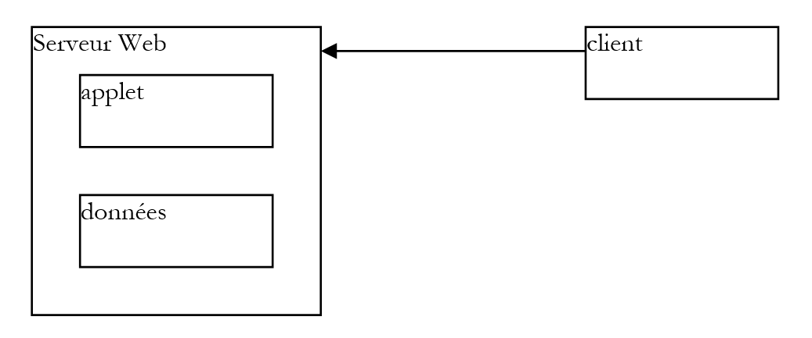
- le client demande un document HTML au serveur Web généralement avec un navigateur. Ce document peut contenir une applet qui fonctionnera comme une application graphique autonome au sein du document HTML affiché par le navigateur du client.
- cette applet pourra avoir accès à des données mais seulement à celles situées sur le serveur web. Elle n'aura pas accès ni aux ressources de la machine cliente qui l'exécute ni à celles d'autres machines du réseau autres que celle à partir de laquelle elle a été téléchargée.
5.6.2. La classe JApplet
5.6.2.1. Définition
Une application peut être téléchargée par un navigateur Web si c'est une instance de la classe java.applet.Applet ou de la classe javax.swing.JApplet. Cette dernière dérive de la première qui est elle-même dérivée de la classe Panel elle-même dérivée de la classe Container. Une instance Applet ou JApplet étant de type container pourra donc contenir des composants (Component) tels que boutons, cases à cocher, listes, … Donnons quelques indications sur le rôle des différentes méthodes :
Méthode | Rôle |
public void destroy(); | détruit l'instance d'Applet |
public AppletContext getAppletContext(); | récupère le contexte d'exécution de l'applet (document HTML dans lequel il se trouve, autres applets du même document, …) |
public String getAppletInfo(); | rend une chaîne de caractères donnant des informations sur l'applet |
public AudioClip getAudioClip(URL url); | charge le fichier audio précisé par URL |
public AudioClip getAudioClip(URL url, String name); | charge le fichier audio précisé par URL/name |
public URL getCodeBase(); | rend l'URL de l'applet |
public URL getDocumentBase(); | rend l'URL du document HTML contenant l'applet |
public Image getImage(URL url); | récupère l'image précisée par URL |
public Image getImage(URL url, String name); | récupère l'image précisée par URL/name |
public String getParameter(String name); | récupère la valeur du paramètre name contenu dans la balise <applet> du document HTML qui contient l'applet. |
public void init(); | cette méthode est lancée par le navigateur lors du lancement initial de l'applet |
public boolean isActive(); | état de l'applet |
public void play(URL url); | joue le fichier son précisé par URL |
public void play(URL url, String name); | joue le fichier son précisé par UR/name |
public void resize(Dimension d); | fixe la dimension du cadre de l'applet |
public void resize(int width, int height); | idem |
public final void setStub(AppletStub stub); | |
public void showStatus(String msg); | met un message dans la barre d'état de l'applet |
public void start(); | cette méthode est lancée par le navigateur à chaque affichage du document contenant l'applet |
public void stop(); | cette méthode est lancée par le navigateur à chaque fois que le document contenant l'applet est abandonné au profit d'un autre (changement d'URL par l'utilisateur) |
La classe JApplet a amené quelques améliorations à la classe Applet, notamment la capacité à contenir des composants JMenuBar c.a.d. des menus, ce qui n'était pas possible avec la classe Applet.
5.6.2.2. Exécution d'une applet : les méthodes init, start et stop
Lorsqu'un navigateur charge une applet, il appelle trois méthodes de celle-ci :
init | Cette méthode est appelée lors du chargement initial de l'applet. On y mettra donc les initialisations nécessaires à l'application. |
start | Cette méthode est appelée à chaque fois que le document contenant l'applet devient le document courant du navigateur. Ainsi lorsqu'un utilisateur charge une applet, les méthodes init et start vont être exécutées dans cet ordre. Lorsqu'il va quitter le document pour en visualiser un autre, la méthode stop va être exécutée. Lorsqu'il reviendra dessus plus tard, la méthode start sera exécutée. |
stop | Cette méthode est appelée à chaque fois que l'utilisateur quitte le document contenant l'applet. |
Pour beaucoup d'applets, seule la méthode init est nécessaire. Les méthodes start et stop ne sont nécessaires que si l'application lance des tâches (threads) qui tournent en parallèle et en continu souvent à l'insu de l'utilisateur. Lorsque celui-ci quitte le document, la partie visible de l'application disparaît, mais ces tâches de fond continuent à travailler. C'est souvent inutile. On profite alors de l'appel du navigateur à la méthode stop pour les arrêter. Si l'utilisateur revient sur le document, on profite de l'appel du navigateur à la méthode start pour les relancer.
Prenons par exemple une applet qui a une horloge dans son interface graphique. Celle-ci est maintenue par une tâche de fond (thread). Lorsque dans le navigateur l'utilisateur quitte la page de l'applet, il est inutile de maintenir l'horloge qui est devenue invisible : dans la méthode stop de l'applet, on arrêtera le thread qui gère l'horloge. Dans la méthode start, on le relancera afin que lorsque l'utilisateur revient sur la page de l'applet, il retrouve une horloge à l'heure.
5.6.3. Transformation d'une application graphique en applet
On suppose ici que cette transformation est possible, c'est à dire qu'elle vérifie les restrictions d'exécution des applets. Une application est lancée par la méthode main d'une de ses classes :
Une telle application est transformée en applet de la façon suivante :
import java.applet.JApplet;
…
public class application extends JApplet{
…
public void init(){
…
}
…
}// fin classe
On notera les points suivants :
- la classe application dérive maintenant de la classe JApplet
- la méthode main est remplacée par la méthode init.
A titre d'exemple, nous revenons sur une application étudiée : la gestion de listes.

Les composants de cette fenêtre sont les suivants :
n° | type | nom | rôle |
1 | JTextField | txtSaisie | champ de saisie |
2 | JList | jList1 | liste contenue dans un conteneur jScrollPane1 |
3 | JList | jList2 | liste contenue dans un conteneur jScrollPane2 |
4 | JButton | cmd1To2 | transfère les éléments sélectionnés de liste 1 vers liste 2 |
5 | JButton | cmd2To1 | fait l'inverse |
6 | JButton | cmdRaz1 | vide la liste 1 |
7 | JButton | cmdRaz2 | vide la liste 2 |
Le squelette de l'application était le suivant :
public class interfaceAppli extends JFrame {
JPanel contentPane;
JLabel jLabel1 = new JLabel();
JLabel jLabel2 = new JLabel();
JLabel jLabel3 = new JLabel();
JTextField txtSaisie = new JTextField();
JButton cmd1To2 = new JButton();
JButton cmd2To1 = new JButton();
DefaultListModel v1=new DefaultListModel();
DefaultListModel v2=new DefaultListModel();
JList jList1 = new JList(v1);
JList jList2 = new JList(v2);
JScrollPane jScrollPane1 = new JScrollPane();
JScrollPane jScrollPane2 = new JScrollPane();
JButton cmdRaz1 = new JButton();
JButton cmdRaz2 = new JButton();
JLabel jLabel4 = new JLabel();
/**Construire le cadre*/
public interfaceAppli() {
enableEvents(AWTEvent.WINDOW_EVENT_MASK);
try {
jbInit();
}
catch(Exception e) {
e.printStackTrace();
}
}//interfaceAppli
/**Initialiser le composant*/
private void jbInit() throws Exception {
...
txtSaisie.addActionListener(new java.awt.event.ActionListener() {
public void actionPerformed(ActionEvent e) {
txtSaisie_actionPerformed(e);
}
});
...
// Jlist1 est placé dans le conteneur jScrollPane1
jScrollPane1.getViewport().add(jList1, null);
// Jlist2 est placé dans le conteneur jScrollPane2
jScrollPane2.getViewport().add(jList2, null);
...
}
/**Remplacé, ainsi nous pouvons sortir quand la fenêtre est fermée*/
protected void processWindowEvent(WindowEvent e) {
...
}
void txtSaisie_actionPerformed(ActionEvent e) {
.............
}//classe
void cmdRaz1_actionPerformed(ActionEvent e) {
// vide liste 1
v1.removeAllElements();
}//cmd Raz1
void cmdRaz2_actionPerformed(ActionEvent e) {
// vide liste 2
v2.removeAllElements();
}///cmd Raz2
Pour transformer la classe appli en applet, il faut procéder comme suit :
- modifier la classe interfaceAppli précédente pour qu'elle dérive non plus de JFrame mais de JApplet :
- supprimer l'instruction qui fixe le titre de la fenêtre JFrame. Une applet JApplet n'a pas de barre de titre
- changer le constructeur en méthode init et dans cette méthode supprimer la gestion des événements fenêtre (WindowListener, ...). Une applet est un conteneur qui ne peut être redimensionné ou fermé.
/**Construire le cadre*/
public init() {
// enableEvents(AWTEvent.WINDOW_EVENT_MASK);
try {
jbInit();
}
catch(Exception e) {
e.printStackTrace();
}
}//interfaceAppli
- La méthode processWindowEvent doit être supprimée ou mise en commentaires
/**Remplacé, ainsi nous pouvons sortir quand la fenêtre est fermée*/
//protected void processWindowEvent(WindowEvent e) {
// super.processWindowEvent(e);
// if (e.getID() == WindowEvent.WINDOW_CLOSING) {
// System.exit(0);
// }
// }
On donne à titre d'exemple le code complet de l'applet sauf la partie générée automatiquement par JBuilder
import java.awt.*;
import java.awt.event.*;
import javax.swing.*;
public class interfaceAppli extends JApplet {
JPanel contentPane;
JLabel jLabel1 = new JLabel();
JLabel jLabel2 = new JLabel();
JLabel jLabel3 = new JLabel();
JTextField txtSaisie = new JTextField();
JButton cmd1To2 = new JButton();
JButton cmd2To1 = new JButton();
DefaultListModel v1=new DefaultListModel();
DefaultListModel v2=new DefaultListModel();
JList jList1 = new JList(v1);
JList jList2 = new JList(v2);
JScrollPane jScrollPane1 = new JScrollPane();
JScrollPane jScrollPane2 = new JScrollPane();
JButton cmdRaz1 = new JButton();
JButton cmdRaz2 = new JButton();
JLabel jLabel4 = new JLabel();
/**Construire le cadre*/
public void init() {
// enableEvents(AWTEvent.WINDOW_EVENT_MASK);
try {
jbInit();
}
catch(Exception e) {
e.printStackTrace();
}
}//interfaceAppli
/**Initialiser le composant*/
private void jbInit() throws Exception {
//setIconImage(Toolkit.getDefaultToolkit().createImage(interfaceAppli.class.getResource("[Votre icône]")));
contentPane = (JPanel) this.getContentPane();
contentPane.setLayout(null);
this.setSize(new Dimension(400, 308));
// this.setTitle("JList");
jScrollPane1.setBounds(new Rectangle(37, 133, 124, 101));
jScrollPane2.setBounds(new Rectangle(232, 132, 124, 101));
.............
}
void txtSaisie_actionPerformed(ActionEvent e) {
// le texte de la saisie a été validé
// on le récupère débarrassé de ses espaces de début et fin
String texte=txtSaisie.getText().trim();
// s'il est vide, on n'en veut pas
if(texte.equals("")){
// msg d'erreur
JOptionPane.showMessageDialog(this,"Vous devez taper un texte",
"Erreur",JOptionPane.WARNING_MESSAGE);
// fin
return;
}//if
// s'il n'est pas vide, on l'ajoute aux valeurs de la liste 1
v1.addElement(texte);
// et on vide le champ de saisie
txtSaisie.setText("");
}
void cmd1To2_actionPerformed(ActionEvent e) {
// transfert des éléments sélectionnés dans la liste 1 vers la liste 2
transfert(jList1,jList2);
}//cmd1To2
private void transfert(JList L1, JList L2){
// transfert des éléments sélectionnés dans la liste 1 vers la liste 2
// on récupère le tableau des indices des éléments sélectionnés dans L1
int[] indices=L1.getSelectedIndices();
// qq chose à faire ?
if (indices.length==0) return;
// on récupère les valeurs de L1
DefaultListModel v1=(DefaultListModel)L1.getModel();
// et celles de L2
DefaultListModel v2=(DefaultListModel)L2.getModel();
for(int i=indices.length-1;i>=0;i--){
// on ajoute à L2 les valeurs sélectionnées dans L1
v2.addElement(v1.elementAt(indices[i]));
// les éléments de L1 copiés dans L2 doivent être supprimés de L1
v1.removeElementAt(indices[i]);
}//for
}//transfert
private void affiche(String message){
// affiche message
JOptionPane.showMessageDialog(this,message,
"Suivi",JOptionPane.INFORMATION_MESSAGE);
}// affiche
void cmd2To1_actionPerformed(ActionEvent e) {
// transfert des éléments sélectionnés dans jList2 vers jList1
transfert(jList2,jList1);
}//cmd2TO1
void cmdRaz1_actionPerformed(ActionEvent e) {
// vide liste 1
v1.removeAllElements();
}//cmd Raz1
void cmdRaz2_actionPerformed(ActionEvent e) {
// vide liste 2
v2.removeAllElements();
}//cmd Raz2
}//classe
On peut compiler le source de cette applet. On le fait ici avec le JDK, sans JBuilder.
E:\data\serge\Jbuilder\interfaces\JApplets\1>javac.bat interfaceAppli.java
E:\data\serge\Jbuilder\interfaces\JApplets\1>dir
12/06/2002 16:40 6 148 interfaceAppli.java
12/06/2002 16:41 527 interfaceAppli$1.class
12/06/2002 16:41 525 interfaceAppli$2.class
12/06/2002 16:41 525 interfaceAppli$3.class
12/06/2002 16:41 525 interfaceAppli$4.class
12/06/2002 16:41 525 interfaceAppli$5.class
12/06/2002 16:41 4 759 interfaceAppli.class
L'application peut être testée avec le programme AppletViewer du JDK qui permet d'exécuter des applets ou un navigateur. Pour cela, il faut créer le document HTML appli.htm qui aura en son sein l'applet :
<html>
<head>
<title>listes swing</title>
</head>
<body>
<applet
code="interfaceAppli.class"
width="400"
height="300">
</applet>
</body>
</html>
On a là, un document HTML classique si ce n'est la présence du tag applet. Celui-ci a été utilisé avec trois paramètres :
code="interfaceAppli.class" | nom de la classe JAVA compilée à charger pour exécuter l'applet |
width="400" | largeur du cadre de l'applet dans le document |
height="300" | hauteur du cadre de l'applet dans le document |
Lorsque le fichier appli.htm a été écrit, on peut le charger avec le programme appletviewer du JDK ou avec un navigateur. On tape dans une fenêtre Dos la commande suivante dans le dossier du fichier appli.htm :
**appletviewer appli.htm**
On suppose ici que le répertoire de l'exécutable appletviewer.exe est dans le PATH de la fenêtre Dos, sinon il faudrait donner le chemin complet de l'exécutable appletviewer.exe. On obtient la fenêtre suivante :

On arrête l'exécution de l'applet avec l'option Applet/Quitter. Testons maintenant l'applet avec un navigateur. Celui-ci doit utiliser une machine virtuelle Java 2 pour pouvoir afficher les composants swing. Jusqu'à récemment (2001), cette contrainte posait problème car Sun produisait des JDK que les éditeurs de navigateurs ne suivaient qu'avec beaucoup de retard. Finalement Sun a mis un terme à cet obstacle en mettant à disposition des utilisateurs une application appelée "Java plugin" qui permet aux navigateurs Internet Explorer et Netscape Navigator d'utiliser les tout derniers JRE produits par Sun (JRE=Java Runtime Environment). Les tests qui suivent ont été faits avec IE 5.5 muni du plugin Java 1.4.
Une première façon de tester l'applet interfaceAppli.class est de charger le fichier HTML appli.htm directement dans le navigateur en double-cliquant dessus. Le navigateur affiche alors la page HTML et son applet sans l'aide d'un serveur Web :

On voit d'après l'URL (1) que le fichier a été chargé dans le navigateur directement. Dans l'exemple suivant, le fichier appli.htm a été demandé à un serveur Web Apache travaillant sur le port 81 de la machine locale :

5.6.4. L'option de mise en forme <applet> dans un document HTML
Nous avons vu qu'au sein d'un document HTML, l'applet était référencée par la commande de mise en forme (tag) <applet>. Cette commande peut avoir divers paramètres :
<applet
code=
width=
height=
codebase=
align=
hspace=
vspace=
alt=
>
<param name1=nom1 value=val1>
<param name2=nom2 value=val2>
texte
>
</applet>
La signification des paramètres est la suivante :
Paramètre | Signification |
code | obligatoire - nom du fichier .class à exécuter |
width | obligatoire - largeur de l'applet dans le document |
height | obligatoire - hauteur … |
codebase | facultatif - URL du répertoire contenant l'applet à exécuter. Si codebase n'est pas précisé, l'applet sera cherché dans le répertoire du document html qui la référence |
align | facultatif - positionnement (LEFT, RiGHT, CENTER) de l'applet dans le document |
hspace | facultatif - marge horizontale entourant l'applet exprimée en pixels |
vspace | facultatif - marge verticale entourant l'applet exprimée en pixels |
alt | facultatif - texte écrit en lieu et place de l'applet si le navigateur ne peut le charger |
param | facultatif - paramètre passé à l'applet précisant son nom (name) et sa valeur (value). L'applet pourra récupérer la valeur du paramètre nom1 par val1=getParameter("nom1") On peut utiliser autant de paramètres que l'on veut |
texte | facultatif - sera affiché par tout navigateur incapable d'exécuter une applet, par exemple parce qu'il ne possède pas de machine virtuelle Java. |
Prenons un exemple pour illustrer le passage de paramètres à une applet :
<html>
<head>
<title>paramètres applet</title>
</head>
<body>
<applet code="interfaceParams.class" width="400" height="300">
<param name="param1" value="val1">
<param name="param2" value="val2">
</applet>
</body>
</html>
Le code Java de l'applet interfaceParams a été généré comme indiqué précédemment. On a construit une application JBuilder puis on a fait les quelques transformations mentionnées plus haut :
import java.awt.*;
import java.awt.event.*;
import javax.swing.*;
public class interfaceParams extends JApplet {
JPanel contentPane;
JScrollPane jScrollPane1 = new JScrollPane();
JLabel jLabel1 = new JLabel();
DefaultListModel params=new DefaultListModel();
JList lstParams = new JList(params);
//Construire le cadre
public void init() {
// enableEvents(AWTEvent.WINDOW_EVENT_MASK);
try {
jbInit();
}
catch(Exception e) {
e.printStackTrace();
}
// autres initialisations
moreInit();
}
// initialisations
public void moreInit(){
// affiche les valeurs des paramètres de l'applet
params.addElement("nom=param1 valeur="+getParameter("param1"));
params.addElement("nom=param2 valeur="+getParameter("param2"));
}//more Init
//Initialiser le composant
private void jbInit() throws Exception {
............
this.setSize(new Dimension(205, 156));
//this.setTitle("Paramètres d'une applet");
jScrollPane1.setBounds(new Rectangle(19, 53, 160, 73));
............
}
}
L'exécution avec AppletViewer :

5.6.5. Accéder à des ressources distantes depuis une applet
Beaucoup d'applications sont amenées à exploiter des informations présentes dans des fichiers ou des bases de données. Nous avons indiqué qu'une applet n'avait pas accès aux ressources de la machine sur laquelle elle s'exécute. C'est une mesure de bon sens. Sinon il suffirait d'écrire une applet pour "espionner" le disque de ceux qui la chargent. L'applet a néammoins accès aux ressources du serveur à partir duquel elle a été téléchargée, par exemple des fichiers. C'est ce que nous allons voir maintenant.
5.6.5.1. La classe URL
Toute application Java peut lire un fichier présent sur une machine du réseau grâce à la classe java.net.URL (URL=Uniform Resource Locator). Une URL identifie une ressource du réseau, la machine sur laquelle il se trouve ainsi que le protocole et le port de communication à utiliser pour la récupérer sous la forme :
protocole:port//machine/fichier
Ainsi l'URL http://www.ibm.com/index.html désigne le fichier index.html de la machine www.ibm.com. Il est accessible par le protocole http. Le port n'est pas précisé : le navigateur utilisera le port 80 qui est le port par défaut du service http.
Détaillons quelques-uns des éléments de la classe URL :
public URL(String spec) | crée une instance d'URL à partir d'une chaîne du type "protocol:port//machine/fichier" - lance une exception si la syntaxe de la chaîne ne correspond pas à une URL |
public String getFile() | permet d'avoir le champ fichier de la chaîne "protocole:port//machine/fichier" de l'URL |
public String getHost() | permet d'avoir le champ machine de la chaîne "protocole:port//machine/fichier" de l'URL |
public String getPort() | permet d'avoir le champ port de la chaîne "protocole:port//machine/fichier" de l'URL |
public String getProtocol() | permet d'avoir le champ protocole de la chaîne "protocole:port//machine/fichier" de l'URL |
public URLConnection openConnection() | ouvre la connexion avec la machine distante getHost() sur son port getPort() selon le protocole getProtocol() en vue de lire le fichier getFile(). Lance une exception si la connexion n'a pu être ouverte |
public final InputStream openStream() | raccourci pour openConnection().getInputStream(). Permet d'obtenir un flux d'entrée à partir duquel le contenu du fichier getFile() va pouvoir être lu. Lance une exception si le flux n'a pu être obtenu |
public String toString() | affiche l'identité de l'instance d'URL |
Il y a ici deux méthodes qui nous intéressent :
- public URL(String spec) pour spécifier le fichier à exploiter
- public final InputStream openStream() pour l'exploiter
5.6.5.2. Un exemple console
On va écrire un programme Java, sans interface graphique, chargé d'afficher à l'écran le contenu d'une URL qu'on lui passe en paramètre. Un exemple d'appel pourrait être le suivant :
Le programme est relativement simple :
import java.net.*; // pour la classe URL
import java.io.*; // pour les flux (stream)
public class urlcontenu{
// affiche le contenu de l'URL passée en argument
// ce contenu doit être du texte pour pouvoir ˆtre lisible
public static void main (String arg[]){
// vérification des arguments
if(arg.length==0){
System.err.println("Syntaxe pg url");
System.exit(0);
}
try{
// création de l'URL
URL url=new URL(arg[0]);
// lecture du contenu
try{
// création du flux d'entrée
BufferedReader is=new BufferedReader(new InputStreamReader(url.openStream()));
try{
// lecture des lignes de texte dans le flux d'entrée
String ligne;
while((ligne=is.readLine())!=null)
System.out.println(ligne);
} catch (Exception e){
System.err.println("Erreur lecture : " +e);
}
finally{
try { is.close(); } catch (Exception e) {}
}
} catch (Exception e){
System.err.println("Erreur openStream : " +e);
}
} catch (Exception e){
System.err.println("Erreur création URL : " +e);
}
}// fin main
}// fin classe
Après avoir vérifié qu'il y avait bien un argument, on tente de créer une URL avec celui-ci :
// création de l'URL
URL url=new URL(arg[0]);
Cette création peut échouer si l'argument ne respecte pas la syntaxe des URL protocole:port//machine/fichier. Si on a une URL syntaxiquement correcte, on essaie de créer un flux d'entrée à partir duquel on pourra lire des lignes de texte. Le flux d'entrée fourni par une URL URL.openStream() fournit un flux de type InputStream qui est un flux orienté caractères : la lecture se fait caractère par caractère et il faut former les lignes soi-même. Pour pouvoir lire des lignes de texte, il faut utiliser la méthode readLine des classes BufferedReader ou DataInputStream.On a choisi ici BufferedReader. Il ne nous reste qu'à transformer le flux InputStream de l'URL en flux BufferedReader. Cela se fait en créant un flux intermédiaire InputStreamReader :
BufferedReader is=new BufferedReader(new InputStreamReader(url.openStream()));
Cette création de flux peut échouer. On gère l'exception correspondante. Une fois le flux obtenu, il ne nous reste plus qu'à y lire les lignes de texte et à afficher celles-ci à l'écran.
String ligne;
while((ligne=is.readLine())!=null)
System.out.println(ligne);
Là encore la lecture peut engendrer une exception qui doit être gérée. Voici un exemple d'exécution du programme qui demande une URL locale :
E:\data\serge\Jbuilder\interfaces\JApplets\3>java urlcontenu http://localhost
<html>
<head>
<title>Bienvenue dans le Serveur Web personnel</title>
</head>
<body bgcolor="#FFFFFF" link="#0080FF" vlink="#0080FF"
topmargin="0" leftmargin="0">
<table border="0" cellpadding="0" cellspacing="0" width="100%"
bgcolor="#000000">
............
</table>
</center></div></td>
</tr>
</table>
</td>
</tr>
</table>
</body>
</html>
5.6.5.3. Un exemple graphique
L'interface graphique sera la suivante :

Numéro | Nom | Type | Rôle |
1 | txtURL | JTextField | URL à lire |
2 | btnCharger | JButton | bouton lançant la lecture de l'URL |
3 | JScrollPane1 | JScrollPane | panneau défilant |
4 | lstURL | JList | liste affichant le contenu de l'URL demandée |
A l'exécution, nous avons un résultat analogue à celui du programme console :

Le code pertinent de l'application est le suivant :
import java.awt.*;
import java.awt.event.*;
import javax.swing.*;
import javax.swing.event.*;
import java.net.*;
import java.io.*;
public class interfaceURL extends JFrame {
JPanel contentPane;
JLabel jLabel1 = new JLabel();
JTextField txtURL = new JTextField();
JButton btnCharger = new JButton();
JScrollPane jScrollPane1 = new JScrollPane();
DefaultListModel lignes=new DefaultListModel();
JList lstURL = new JList(lignes);
//Construire le cadre
public interfaceURL() {
..............
}
//Initialiser le composant
private void jbInit() throws Exception {
..............
}
//Remplacé, ainsi nous pouvons sortir quand la fenêtre est fermée
protected void processWindowEvent(WindowEvent e) {
...................
}
void txtURL_caretUpdate(CaretEvent e) {
// positionne l'état du bouton Charger
btnCharger.setEnabled(! txtURL.getText().trim().equals(""));
}
void btnCharger_actionPerformed(ActionEvent e) {
// affiche le contenu de l'URL dans la liste
try{
afficherURL(txtURL.getText().trim());
}catch(Exception ex){
// affichage erreur
JOptionPane.showMessageDialog(this,"Erreur : " + ex.getMessage(),"Erreur",JOptionPane.ERROR_MESSAGE);
}//try-catch
}
private void afficherURL(String strURL) throws Exception {
// affiche le contenu de l'URL strURL dans la liste
// aucune exception n'est gérée spécifiquement. On se contente de les remonter
// création de l'URL
URL url=new URL(strURL);
// création du flux d'entrée
BufferedReader IN=new BufferedReader(new InputStreamReader(url.openStream()));
// lecture des lignes de texte dans le flux d'entrée
String ligne;
while((ligne=IN.readLine())!=null)
lignes.addElement(ligne);
// fermeture flux de lecture
IN.close();
}
}
5.6.5.4. Une applet
L'application graphique précédente est transformée en applet comme il a été présenté plusieurs fois. L'applet est insérée dans un document HTML appliURL.htm :
<html>
<head>
<title>Applet lisant une URL</title>
</head>
<body>
<h1>Applet lisant une URL</h1>
<applet
code="appletURL.class"
width="400"
height="300"
>
</applet>
</body>
</html>

Dans l'exemple ci-dessus, le navigateur a demandé l'URL http://localhost:81/Japplets/2/appliURL.htm à un serveur web apache fonctionnant sur le port 81. L'applet a été alors affichée dans le navigateur. Dans celle-ci, on a demandé de nouveau l'URL http://localhost:81/Japplets/2/appliURL.htm pour vérifier qu'on obtenait bien le fichier appliURL.htm qu'on avait construit. Maintenant essayons de charger une URL n'appartenant pas à la machine qui a délivré l'applet (ici localhost) :
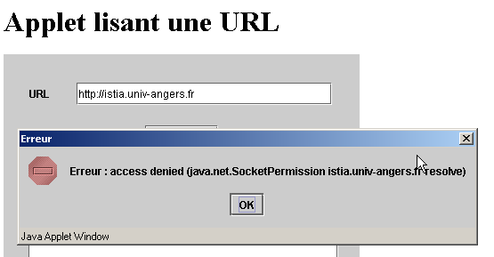
Le chargement de l'URL a été refusé. On retrouve ici la contrainte liée aux applets : elles ne peuvent accéder qu'aux seules ressources réseau de la machine à partir de laquelle elles ont été téléchargées. Il y un moyen pour l'applet de contourner cette contrainte qui est de déléguer les demandes réseau à un programme serveur situé sur la machine d'où elle a été téléchargée. Ce programme fera les demandes réseau à la place de l'applet et lui renverra les résultats. On appelle cela un programme relais.
5.7. L'applet IMPOTS
Nous allons transformer maintenant l'application graphique IMPOTS en applet. Cela présente un certain intérêt : l'application deviendra disponible à tout internaute disposant d'un navigateur et d'un Java plugin 1.4 (à cause du composant JSpinner). Notre application devient ainsi planétaire... Cette modification va nécessiter un peu plus que la simple transformation application graphique --> applet devenue maintenant classique. L'application utilise une option de menu Initialiser dont le but est de lire le contenu d'un fichier local. Or si on se représente une application Web, on voit que ce schéma ne tient plus :

Il est évident que les données définissant les barêmes de l'impôt seront sur le serveur web et non pas sur chacune des machines clientes. Le fichier à lire sur le serveur web sera ici placé dans le même dossier que l'applet et l'option Initialiser devra aller le chercher là. Les exemples précédents ont montré comment faire cela. Par ailleurs, pour sélectionner le fichier des données localement, on avait utilisé un composant JFileChooser qui n'a plus lieu d'être ici.
Le document HTML contenant l'applet sera le suivant :
<html>
<head>
<title>Applet de calcul d'impôts</title>
</head>
<body>
<h2>Calcul d'impôts</h2>
<applet
code="appletImpots.class"
width="320"
height="270"
>
*<param name="data" value="impots.txt">*
On notera la paramètre data dont la valeur est le nom du fichier contenant les données du barême de l'impôt. Le document HTML, la classe appletImpots, la classe impots et le fichier impots.txt sont tous dans le même dossier du serveur Web :
E:\data\serge\web\JApplets\impots>dir
12/06/2002 13:24 247 impots.txt
13/06/2002 10:17 654 appletImpots$2.class
13/06/2002 10:17 653 appletImpots$3.class
13/06/2002 10:17 653 appletImpots$4.class
13/06/2002 10:17 651 appletImpots$5.class
13/06/2002 10:06 651 appletImpots$6.class
13/06/2002 10:17 8 655 appletImpots.class
13/06/2002 10:17 657 appletImpots$1.class
13/06/2002 10:24 286 appletImpots.htm
13/06/2002 10:17 1 305 impots.class
Le code de l'applet est le suivant (nous n'avons mis en relief que les changements par rapport à l'application graphique) :
...........
import java.net.*;
import java.applet.Applet;
public class appletImpots extends JApplet {
// les composants de la fenêtre
JPanel contentPane;
............................
// les attributs de la classe
double[] limites=null;
double[] coeffr=null;
double[] coeffn=null;
impots objImpots=null;
String urlDATA=null;
//Construire le cadre
public void init() {
//enableEvents(AWTEvent.WINDOW_EVENT_MASK);
try {
jbInit();
}
catch(Exception e) {
e.printStackTrace();
}
// autres initialisations
moreInit();
}
// initialisation formulaire
private void moreInit(){
// menu Calculer inhibé
mnuCalculer.setEnabled(false);
................
// on récupère le nom du fichier du barême des impôts
String nomFichier=getParameter("data");
// erreur ?
if(nomFichier==null){
// msg d'erreur
txtStatus.setText("Le paramètre data de l'applet n'a pas été initialisé");
// on bloque l'option Initialiser
mnuInitialiser.setEnabled(false);
// fin
return;
}//if
// on fixe l'URL des données
urlDATA=getCodeBase()+"/"+nomFichier;
}//moreInit
//Initialiser le composant
private void jbInit() throws Exception {
...................
}
void mnuQuitter_actionPerformed(ActionEvent e) {
// on quitte l'application
System.exit(0);
}
void mnuInitialiser_actionPerformed(ActionEvent e) {
// on charge le fichier des données
try{
// lecture données
lireDATA();
// création de l'objet impots
objImpots=new impots(limites,coeffr,coeffn);
................
}
private void lireDATA() throws Exception {
// les tableaux de données
ArrayList aLimites=new ArrayList();
ArrayList aCoeffR=new ArrayList();
ArrayList aCoeffN=new ArrayList();
String[] champs=null;
// ouverture fichier en lecture
BufferedReader IN=new BufferedReader(new InputStreamReader(new URL(urlDATA).openStream()));
// on lit le fichier ligne par ligne
....................
}
void mnuCalculer_actionPerformed(ActionEvent e) {
// calcul de l'impôt
......................
}
void txtSalaire_caretUpdate(CaretEvent e) {
..........
}
void mnuEffacer_actionPerformed(ActionEvent e) {
...............
}
}
Nous ne commentons ici que les modifications amenées par le fait que le fichier des données à lire est maintenant sur une machine distante plutôt que sur une machine locale :
Le nom de l'URL du fichier des données à lire est obtenu par le code suivant :
// on récupère le nom du fichier du barême des impôts
String nomFichier=getParameter("data");
// erreur ?
if(nomFichier==null){
// msg d'erreur
txtStatus.setText("Le paramètre data de l'applet n'a pas été initialisé");
// on bloque l'option Initialiser
mnuInitialiser.setEnabled(false);
// fin
return;
}//if
// on fixe l'URL des données
urlDATA=getCodeBase()+"/"+nomFichier;
Rappelons-nous que le nom du fichier "impots.txt" est passé dans le paramètre data de l'applet :
Le code ci-dessus commence donc par récupérer la valeur du paramètre data en gérant une éventuelle erreur. Si l'URL du document HTML contenant l'applet est http://localhost:81/JApplets/impots/appletImpots.htm, l'URL du fichier impots.txt sera http://localhost:81/JApplets/impots/impots.txt. Il nous faut construire le nom de cette URL. La méthode getCodeBase() de l'applet donne l'URL du dossier où a été récupéré le document HTML contenant l'applet, donc dans notre exemple http://localhost:81/JApplets/impots. L'instruction suivante permet donc de construire l'URL du fichier des données :
On trouve dans la méthode lireFichier() qui lit le contenu de l'URL urlData, la création du flux d'entrée qui va permettre de lire les données :
// ouverture fichier en lecture
BufferedReader IN=new BufferedReader(new InputStreamReader(new URL(urlDATA).openStream()));
A partir de là, on ne peut plus distinguer le fait que les données viennent d'un fichier distant plutôt que local. Voici un exemple d'exécution de l'applet :

5.8. Conclusion
Ce chapitre a présenté
- une introduction à la construction d'interfaces graphiques avec Jbuilder
- les composants swing les plus courants
- la construction d'applets
Nous retiendrons que
- le code généré par JBuilder peut être écrit à la main. Une fois ce code obtenu d'une manière ou d'une autre, un simple JDK suffit pour l'exécuter et JBuilder n'est alors plus indispensable.
- l'utilisation d'un outil tel que JBuilder peut amener des gains de productivité importants :
- s'il est possible d'écrire à la main le code généré par JBuilder, cela peut prendre beaucoup de temps et ne présente que peu d'intérêt, la logique de l'application étant en général ailleurs.
- le code généré peut être instructif. Le lire et l'étudier est une bonne façon de découvrir certaines méthodes et propriétés de composants qu'on utilise pour la première fois.
- JBuilder est multi plate-formes. On conserve donc ses acquis en passant d'une plate-forme à l'autre. Pouvoir écrire des programmes fonctionnant à la fois sous windows et Linux est bien sûr un facteur de productivité très important. Mais il est dû à Java lui-même et non à JBuilder.
5.9. Jbuilder sous Linux
Tous les exemples précédents ont été testés sous Windows 98. On peut se demander si les programmes écrits sont portables tels quels sous Linux. Moyennant que la machine Linux en question ait les classes utilisées par les différents programmes, ils le sont. Si vous avez par exemple installé JBuilder sous Linux les classes nécessaires sont déjà sur votre machine. Voici par exemple ce que donne l'exécution d'un de nos programmes sur le composant JList avec JBuilder 4 sous Linux :
Nous présentons ci-dessous l'installation de JBuilder 4 Foundation sur une machine Linux. Son installation sur une machine Win9x ne pose aucun problème et est analogue au processus qui va maintenant être décrit. L'installation des version sultérieures est sans doute différente mais ce document peut néanmoins quelques informations utiles.
Jbuilder est disponible sur le site d''Inprise à l'url http://www.inprise.com/jbuilder

On trouve sur cette page les liens pour notamment Windows et Linux. Nous décrivons maintenant l'installation de JBuilder sur une machine Linux ayant l'interface graphique KDE.
En suivant le lien Jbuilder 4 for Linux, un formulaire est présenté. On le remplit et au final on récupère deux fichiers :
jb4docs_fr.tar.gz : la documentation et les exemples de Jbuilder4
jb4fndlinux_fr.tar.gz : Jbuilder4 Foundation. C'est une version limitée du Jbuilder4 commercial mais suffisant dans un contexte éducatif.
Une clé d'activation du logiciel vous est envoyée par courrier électronique. Elle vous permettra d'utiliser Jbuilder4 et vous sera demandée dès la 1ère utilisation. Si vous perdez cette clé, vous pouvez revenir à l'url ci-dessus et suivre le lien "get your activation key". Nous supposons par la suite que vous êtes root et que vous êtes placé dans le répertoire des deux fichiers tar.gz ci-dessus. On décompresse les deux fichiers :
[ls -l]
drwxr-xr-x 3 nobody nobody 4096 oct 10 2000 docs
drwxr-xr-x 3 nobody nobody 4096 déc 5 13:00 foundation
[ls -l foundation]
-rw-r--r-- 1 nobody nobody 1128 déc 5 13:00 deploy.txt
-rwxr-xr-x 1 nobody nobody 69035365 déc 5 13:00 fnd_linux_install.bin
drwxr-xr-x 2 nobody nobody 4096 déc 5 13:00 images
-rw-r--r-- 1 nobody nobody 15114 déc 5 13:00 index.html
-rw-r--r-- 1 nobody nobody 23779 déc 5 13:00 license.txt
-rw-r--r-- 1 nobody nobody 75739 déc 5 13:00 release_notes.html
-rw-r--r-- 1 nobody nobody 31902 déc 5 13:00 whatsnew.html
[ls -l docs]
-rw-r--r-- 1 nobody nobody 1128 oct 10 2000 deploy.txt
-rwxr-xr-x 1 nobody nobody 40497874 oct 10 2000 doc_install.bin
drwxr-xr-x 2 nobody nobody 4096 oct 10 2000 images
-rw-r--r-- 1 nobody nobody 9210 oct 10 2000 index.html
-rw-r--r-- 1 nobody nobody 23779 oct 10 2000 license.txt
-rw-r--r-- 1 nobody nobody 75739 oct 10 2000 release_notes.html
-rw-r--r-- 1 nobody nobody 31902 oct 10 2000 whatsnew.html
Dans les deux répertoires générés, le fichier .bin est le fichier d'installation. Par ailleurs, avec un navigateur affichez le fichier index.html de chacun des répertoires. Ils donnent la marche à suivre pour installer les deux produits. Commençons par installer Jbuilder Foundation :
Arrive le 1er écran de l'installation. Vont suivre de nombreux autres :
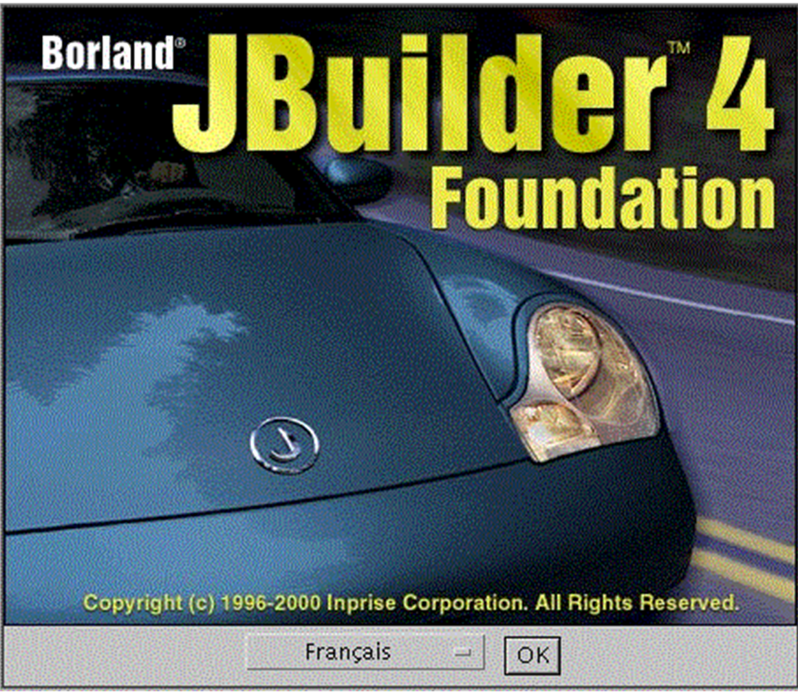
Validez. Suit un écran d'explications :

Faites [suivant].

Acceptez le contrat de licence et faites [suivant].
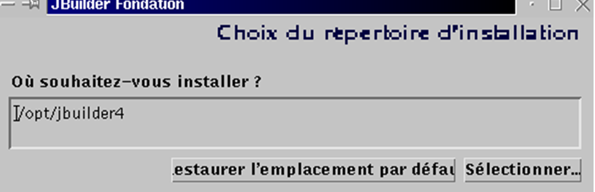
Acceptez l'emplacement proposé pour Jbuilder (notez le, vous en aurez besoin ultérieurement) et faites [suivant]. L'installation se fait rapidement.
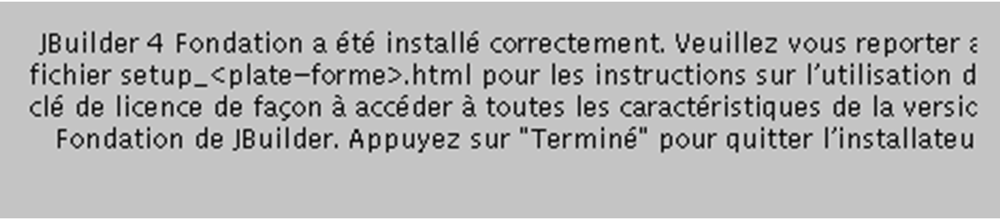
Nous sommes prêts pour un premier test. Dans KDE, lancez le gestionnaire de fichiers pour aller dans le répertoire des exécutables de Jbuilder : /opt/jbuilder4/bin (si vous avez installé jbuilder dans /opt/jbuilder4) :
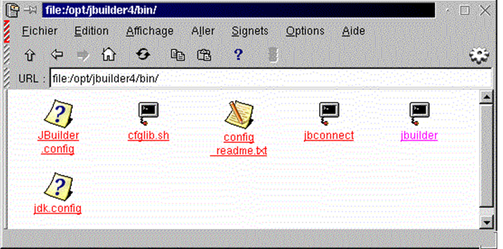
Cliquez sur l'icône jbuilder ci-dessus. Comme c'est la 1ère fois que vous utilisez Jbuilder, vous allez devoir entrer votre clé d'activation :

Remplissez les champs Nom et Société. Faites [Ajouter] pour entrer votre clé d'activation. On rappelle que celle-ci a du vous être envoyée par mail et que si vous l'avez perdue, vous pouvez l'avoir à l'url où vous avez récupéré Jbuilder 4 (cf début de l'installation). Une fois votre clé d'activation acceptée, on vous rappellera les conditions de licence :

En faisant OK, vous revenez à la fenêtre de saisie des informations déjà vue :

Faites OK pour terminer cette phase qui ne s'exécute que lors de la 1ère exécution. Apparaît ensuite, l'environnement de développement de Jbuilder :

Quittez Jbuilder pour installer maintenant la documentation. Celle-ci va installer un certain nombre de fichiers qui seront utilisés dans l'aide de Jbuilder, aide qui pour l'instant est incomplète. Revenez dans le répertoire où vous avez décompressé les fichiers tar.gz de Jbuilder. Le programme d'installation est dans le répertoire docs. Placez-vous dedans :
[cd docs]
[ls -l]
-rw-r--r-- 1 nobody nobody 1128 oct 10 2000 deploy.txt
-rwxr-xr-x 1 nobody nobody 40497874 oct 10 2000 doc_install.bin
drwxr-xr-x 2 nobody nobody 4096 oct 10 2000 images
-rw-r--r-- 1 nobody nobody 9210 oct 10 2000 index.html
-rw-r--r-- 1 nobody nobody 23779 oct 10 2000 license.txt
-rw-r--r-- 1 nobody nobody 75739 oct 10 2000 release_notes.html
-rw-r--r-- 1 nobody nobody 31902 oct 10 2000 whatsnew.html
Le fichier d'installation est doc_install.bin mais on ne peut le lancer immédiatement. Si on le fait, l'installation échoue sans qu'on comprenne pourquoi. Lisez le fichier index.html avec un navigateur pour une description précise du mode d'installation. L'installateur a besoin d'une machine virtuelle java, en fait un programme appelé java et celui-ci doit être dans le PATH de votre machine. On rappelle que PATH est une variable Unix dont la valeur de la forme rep1:rep2:...:repn indique les répertoires repi qui doivent être explorés dans la recherche d'un exécutable. Ici, l'installateur demande l'exécution d'un programme java. Vous pouvez avoir plusieurs versions de ce programme selon le nombre de machines virtuelles Java que vous avez installées ici ou là. Assez logiquement, nous utiliserons celui amené par Jbuilder4 et qui se trouve dans /opt/jbuilder4/jdk1.3/bin. Pour mettre ce répertoire dans la variable PATH :
[echo $PATH]
/usr/local/sbin:/usr/sbin:/sbin:/usr/local/sbin:/usr/local/bin:/sbin:/bin:/usr/sbin:/usr/bin:/usr/X11R6/bin:/root/bin
[export PATH=/opt/jbuilder4/jdk1.3/bin/:$PATH]
[echo $PATH]
/opt/jbuilder4/jdk1.3/bin/:/usr/local/sbin:/usr/sbin:/sbin:/usr/local/sbin:/usr/local/bin:/sbin:/bin:/usr/sbin:/usr/bin:/usr/X11R6/bin:/root/bin
Nous pouvons maintenant lancer l'installation de la documentation :
C'est une installation graphique qui va se faire :

Elle est très analogue à celle de Jbuilder Foundation. Aussi ne la détaillerons-nous pas. Il y a un écran qu'il ne faut pas rater :

L'installateur doit normalement trouver tout seul où vous avez installé Jbuilder Foundation. Ne changez donc pas ce qui vous est proposé sauf bien sûr si c'était faux.
Une fois la documentation installée, nous sommes prêts pour un nouveau test de Jbuilder. Lancez l'application comme il a été montré plus haut. Une fois Jbuilder présent, prenez l'option Aide/Rubrique d'aide. Dans le cadre de gauche, cliquez sur le lien Tutoriels :

Jbuilder est livré avec un ensemble de tutoriels qui vous permettront de démarrer en programmation Java. Ci-dessous on a suivi le tutoriel "Construction d'une application" ci-dessus.

Dans Jbuilder, faites Fichier/Nouveau projet. Un assistant va vous présenter 3 écrans :

Nous allons créer une simple fenêtre avec le titre "Bonjour tout le monde". Nous appelons ce projet coucou. L'exemple a été exécuté par root. Jbuilder propose alors de rassembler tous les projets dans un répertoire jbproject du répertoire de connexion de root. Le projet coucou sera placé dans le répertoire coucou (Champ Nom du répertoire du projet) de jbproject. Faites [suivant].

Ce second écran est un résumé des différents chemins de votre projet. Il n'y a rien à modifier. Faites [suivant].

Le 3ième écran vous demande de personnaliser votre projet. Complétez et faites [Terminer].
Faites maintenant Fichier/Nouveau :

Choisissez Application et faites OK. Un nouvel assistant va vous présenter 2 écrans :

Le champ paquet reprend le nom du projet. Le champ classe demande le nom qui sera donné à la classe principale du projet. Prenez le nom ci-dessus et faites [suivant] :

Notre application comporte une seconde classe Java pour la fenêtre de l'application. Donnez un nom à cette classe. Le champ Titre est le titre que vous voulez donner à cette fenêtre. Le cadre options vous propose des options pour votre fenêtre. Prenez-les toutes et faites [Terminer]. Vous revenez alors à l'environnement Jbuilder qui s'est enrichi des informations que vous avez données pour votre projet :

Dans la fenêtre de gauche/haut (1), vous avez la liste des fichiers qui composent votre projet. On trouve notamment les deux classes .java dont nous venons de donner le nom. Dans la fenêtre de droite (2) vous avez le code Java de la classe coucouCadre. Dans la fenêtre de gauche/bas, vous avez la structure (classes, méthodes, attributs) de votre projet. Il est prêt à être exécuté. Appuyez sur le bouton 4 ci-dessus ou faites Exécuter/Exécuter le projet ou faites F9. Vous devriez obtenir la fenêtre suivante :
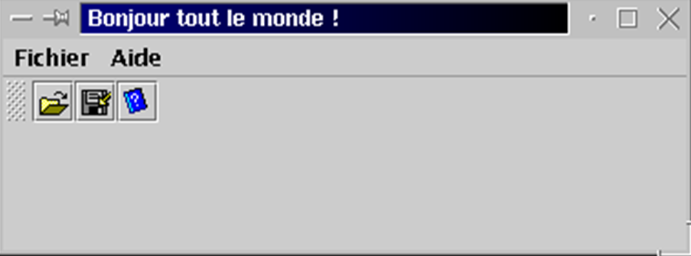
En cliquant sur l'option Aide, vous devriez retrouver des informations que vous avez données aux assistants de création. Nous n'irons pas plus loin. Il est temps maintenant de vous plonger dans les tutoriels.
Avant de terminer, montrons simplement que vous pouvez utiliser non pas Jbuilder et son interface graphique mais le jdk qu'il a amené avec lui et qu'il a placé dans /opt/jbuilder4/jdk1.3. Construisez le fichier essai1.java suivant :
import java.io.*;
public class essai1{
public static void main(String args[]){
System.out.println("coucou");
System.exit(0);
}
}
Compilons-le et exécutons-le avec le jdk de Jbuilder :